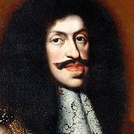
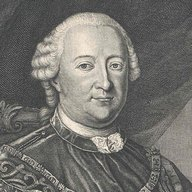

Outcome
Period
Where
Search
All 258 entries
01 Write-ups
- read in 1931
 A Catalan letter in transposition, Barcelona 2 May [1413–16] — ACA Reserva 121413–16The oldest item on DECODE with a public image, listed as an undeciphered cipher of unknown type. It is a Catalan letter to the King written down the columns of each block, the word chunks cut by slashes, and Xavier de Salas explained the rule and printed the whole text in 1931, in the article the record itself cites. The rule is checked here on the image: the first block reads Senyor, jo us auie quezacom escrit… A royal financial officer in Barcelona, with Roger de Pallars, urges Ferdinand I to leave València and hold the corts, and defends his own accounts.
A Catalan letter in transposition, Barcelona 2 May [1413–16] — ACA Reserva 121413–16The oldest item on DECODE with a public image, listed as an undeciphered cipher of unknown type. It is a Catalan letter to the King written down the columns of each block, the word chunks cut by slashes, and Xavier de Salas explained the rule and printed the whole text in 1931, in the article the record itself cites. The rule is checked here on the image: the first block reads Senyor, jo us auie quezacom escrit… A royal financial officer in Barcelona, with Roger de Pallars, urges Ferdinand I to leave València and hold the corts, and defends his own accounts. - adjudicated, not readThe Voynich manuscript — hoax, cipher or language, adjudicatedc.1420Six computational tests on the transliteration against eleven languages and implemented hoax generators, each re-run adversarially, and five literature sweeps. A plain or simply enciphered European language is excluded on transliteration-robust entropy; a verbose encoding and a structured meaningless text are left roughly even, with the tests that would separate them.
- readGaleotto da Ricasoli to the Dieci di Balía, Urbino 1425 — Read1425A letter of Florence’s envoy to the Count of Urbino, listed on DECODE as non-decrypted, though its interlinear decipherment makes it decrypted; what the record lacks is the key or a reference to it. The abbé Gabbrielli glossed a few of its words in 1863 and built a key from them, which Meister printed in 1902; the letter was never printed. The three long runs he left unread are decoded sign by sign with his glosses as seeds, two of his nulls resolved and four new values confirmed on the siblings.
- read in 1869Alchymey teuczsch, 1426 — the sign alphabets of an alchemists’ notebook (Cod. Pal. germ. 597)1426A German recipe book of a circle of gold-makers near Passau, dated 1426 and listed on DECODE as non-decrypted, with substance names hidden in three home-made sign alphabets. The compiler wrote the key on the first leaf as one unbroken run of signs “so that no one should understand that it is an alphabet”, then struck it through. Wilhelm Wattenbach read it in 1869 and printed three facsimiles with their plaintexts. Here the struck alphabet of f. 1r and the invocation alphabet of f. 6v are recovered from the images and checked against his readings, a third set is partly fixed from the Heidelberg catalogue’s reading of f. 93r, and the book is ruled out as a record candidate.
- read in part
 Cipher letters to Gianfrancesco Gonzaga, 1428–1430 — Read in part1428–1430DECODE R1854, catalogued as one letter from an unknown sender, is four cipher letters to the lord of Mantua: Pandolfo Malatesta (Rome, April 1428), an unnamed agent (Rome, August 1428), an informant at Forlì (November 1428) and Francesco de’ Cattanei (Rome, February 1430). Two keys were rebuilt from the ciphertext alone and one taken from a contemporary interlinear gloss; three letters read (96.6–100%): a Gonzaga marriage, the Malatesta and the count of Urbino, and the archbishop of Patras offering his see to Venice. Pandolfo Malatesta’s own runs stay unread.
Cipher letters to Gianfrancesco Gonzaga, 1428–1430 — Read in part1428–1430DECODE R1854, catalogued as one letter from an unknown sender, is four cipher letters to the lord of Mantua: Pandolfo Malatesta (Rome, April 1428), an unnamed agent (Rome, August 1428), an informant at Forlì (November 1428) and Francesco de’ Cattanei (Rome, February 1430). Two keys were rebuilt from the ciphertext alone and one taken from a contemporary interlinear gloss; three letters read (96.6–100%): a Gonzaga marriage, the Malatesta and the count of Urbino, and the archbishop of Patras offering his see to Venice. Pandolfo Malatesta’s own runs stay unread. - not read, keys tested

 Queen María to Alfonso V, Valencia 1435 — Attempted1435The oldest unread ciphertext on DECODE with a public image: 42 signs inside a Catalan letter of Queen María to Alfonso V, written in Valencia on the day of Ponza, about something “continued until All Saints”, almost certainly the truce with Castile. Both printed Aragonese keys of the decade were tested: the 1437 alphabet is unrelated, and the 1429 nomenclator seems to match the word signs while its alphabet does not. Four neighbouring registers, 1,414 images, hold no cipher at all; the king’s own register shows his letter to her of 27 July 1435 was sent in ciffra.
Queen María to Alfonso V, Valencia 1435 — Attempted1435The oldest unread ciphertext on DECODE with a public image: 42 signs inside a Catalan letter of Queen María to Alfonso V, written in Valencia on the day of Ponza, about something “continued until All Saints”, almost certainly the truce with Castile. Both printed Aragonese keys of the decade were tested: the 1437 alphabet is unrelated, and the 1429 nomenclator seems to match the word signs while its alphabet does not. Four neighbouring registers, 1,414 images, hold no cipher at all; the king’s own register shows his letter to her of 27 July 1435 was sent in ciffra. - not read, keys scanned
 A reply to Zorzo Maino, 4 May 1446 — Attempted1446An undescribed DECODE slip (R7898) turns out to be, by Mazzatinti’s 1883 inventory, the Sforza side’s reply to its agent Giorgio del Maino: clear Lombard Italian with runs of invented signs. A second cipher of the same day, Vincenzo Amidani’s from Milan, was found photographed on R7899. Both were transcribed and annealed without result. Among the 208 Sforza keys on DECODE, Simonetta’s cipher with Vincentius shows the family uses syllable and word signs, but no key matches.
A reply to Zorzo Maino, 4 May 1446 — Attempted1446An undescribed DECODE slip (R7898) turns out to be, by Mazzatinti’s 1883 inventory, the Sforza side’s reply to its agent Giorgio del Maino: clear Lombard Italian with runs of invented signs. A second cipher of the same day, Vincenzo Amidani’s from Milan, was found photographed on R7899. Both were transcribed and annealed without result. Among the 208 Sforza keys on DECODE, Simonetta’s cipher with Vincentius shows the family uses syllable and word signs, but no key matches. - earlier readings found

 Beatrice d’Aragona: four earlier readings and one plain letter1482–1505Four cipher letters have readings in editions of 1877–78; the May 1486 letter also has manuscript decipherment slips. The fifth record is plain Italian dated 1505, not 1504, and explicitly says the queen has no cipher. The March edition retains unexplained Virtus/Fortis/M. markers; no new key or exhaustive glyph validation is claimed.
Beatrice d’Aragona: four earlier readings and one plain letter1482–1505Four cipher letters have readings in editions of 1877–78; the May 1486 letter also has manuscript decipherment slips. The fifth record is plain Italian dated 1505, not 1504, and explicitly says the queen has no cipher. The March edition retains unexplained Virtus/Fortis/M. markers; no new key or exhaustive glyph validation is claimed. - read in 1877
 Matthias Corvinus to Ercole I d’Este, Pozsony 1 June 1482 — DECODE R11561482The King of Hungary answers Ferrara’s call for help in the first weeks of the War of Ferrara, with troops, route, names and plan in a sign cipher. DECODE lists it as partly decrypted, but it was printed in 1877 and again by Fraknói in 1895. The runs are read here from the image and a working key rebuilt; four garbled places in the printed text are corrected, among them the closing sentence the edition prints as nonsense.
Matthias Corvinus to Ercole I d’Este, Pozsony 1 June 1482 — DECODE R11561482The King of Hungary answers Ferrara’s call for help in the first weeks of the War of Ferrara, with troops, route, names and plan in a sign cipher. DECODE lists it as partly decrypted, but it was printed in 1877 and again by Fraknói in 1895. The runs are read here from the image and a working key rebuilt; four garbled places in the printed text are corrected, among them the closing sentence the edition prints as nonsense. - read in partNicolò Sadoleto to Ercole I d’Este, Pozsony 1482 — the Venetian counter-offer to Matthias Corvinus1482Ferrara’s envoy at the Hungarian court in the first summer of the War of Ferrara wrote parts of his despatches in a sign cipher; they were never printed, and DECODE lists four as partly decrypted. The alphabet is rebuilt from two sibling letters filed with their contemporary clear copies, which also shows that two of the four targets were read at the time. The cipher of 16 July 1482, which has no clear copy, is read but for a few words under stains and the fold: Venice had offered Matthias Veglia, a fleet command for his natural son János Corvin and a hundred thousand ducats a year, and Sadoleto urged that the League match it. A faded block of 17 August gives fragments only.
- readMaffeo da Treviglio to Ludovico Sforza, Buda 1489–1490 — the key reconstructed in 2016 had never been turned back into signs1489–90Judit W. Somogyi reconstructed the cipher of Ludovico Sforza’s ambassador at the court of Matthias Corvinus in 2016, but printed it only as a table of numbers, with no image of a single sign, so nothing could be read with it. Her numbering turns out to follow the order of first appearance in the letter of 2 April 1490, which survives with its contemporary clear copy: matching the two gives the shapes back, and about twenty further signs came out of the reading. The two despatches that have no decipherment are now read. The four pages of 22 November 1489, of which only the first two lines had been published deciphered, cover the peace with Frederick III, the Diet, the marriage of John Corvinus against the rival Neapolitan match, the queen’s “insatiable wrath of Juno”, and a warning that intercepted cipher letters had been read; the letter of 12 January 1490 reports the king riding to Vienna on the 8th and the ambassadors following on the 15th, which its own clear second page confirms word for word.
- keys found, two part read
 Espagnol 318 — five ciphered letters of the Catholic Monarchs, and which keys open them1497–1504The oldest item in the catalogue, and four different answers. No. 5 was never open: Ivan Parisi printed the whole text in 2020, having found that the king of Naples had his secret letter enciphered in the Spanish ambassador’s own cipher, by the ambassador’s hand. No. 92, the Great Captain to Lorenzo Suárez of 17 August 1500, is written in the Cifra general de los Reyes Católicos that Galende Díaz printed in 1994 — proposed by Tomokiyo from the look of the code groups, proved here against eight words a later hand wrote between the lines, with no misses; both pages are now transcribed and about three quarters read: the Great Captain’s price for joining Venice against the Turk in 1500, harbours in Italy for his sick, wounded and stores. No. 95 has George Lasry’s alphabet and no published text: segmenting and clustering its 963 signs reads about two thirds, Spanish, about the French and about what a Señoría can be brought to do. Nos. 93 and 94 stay unread but are named: their code initials exclude both printed keys and point at the Gran cifra of 1501–04, whose only reconstruction sits in a Madrid manuscript that is not served online.
Espagnol 318 — five ciphered letters of the Catholic Monarchs, and which keys open them1497–1504The oldest item in the catalogue, and four different answers. No. 5 was never open: Ivan Parisi printed the whole text in 2020, having found that the king of Naples had his secret letter enciphered in the Spanish ambassador’s own cipher, by the ambassador’s hand. No. 92, the Great Captain to Lorenzo Suárez of 17 August 1500, is written in the Cifra general de los Reyes Católicos that Galende Díaz printed in 1994 — proposed by Tomokiyo from the look of the code groups, proved here against eight words a later hand wrote between the lines, with no misses; both pages are now transcribed and about three quarters read: the Great Captain’s price for joining Venice against the Turk in 1500, harbours in Italy for his sick, wounded and stores. No. 95 has George Lasry’s alphabet and no published text: segmenting and clustering its 963 signs reads about two thirds, Spanish, about the French and about what a Señoría can be brought to do. Nos. 93 and 94 stay unread but are named: their code initials exclude both printed keys and point at the Gran cifra of 1501–04, whose only reconstruction sits in a Madrid manuscript that is not served online. - 3 of 4 readFerdinand the Catholic to Jerónimo de Vich, 1511–12 — Ravenna, Milan and a spiritual war on Louis XII1511–12Three letters of Ferdinand the Catholic to his ambassador at Rome, AHN Estado 8715 N.45, N.57 and N.60 (April 1511 to September 1512), written wholly in cipher and filed without the decipherment their siblings carry. The nomenclator, a homophonic alphabet with 153 code groups for words and syllables, was rebuilt by lining two deciphered siblings up with the clerk’s text, and then read the three letters it was not built from. Julius II’s cardinals and Venice, Ferdinand’s account of how his army was pushed into Ravenna, the Sforza restoration in Milan. The 1515 letter is another system. Terrateig’s 1963 edition, not seen, may already print them.
- printed 1875; re-read
 Diego López de Ayala to Cardinal Cisneros, 30 August 1516 — a “Non-decrypted” letter read with a sibling key1516DECODE R9954 is five pages of invented signs from Cisneros’s agent at the court of King Charles, catalogued as Non-decrypted. Tomokiyo’s key for Ayala’s letter of 12 July (R10024) reads it unchanged. Read here before the 1875 edition was found, and checked against it: the sale of vacant Castilian offices around Chièvres, Queen Germaine’s dealings with France, the peace of Noyon to be proclaimed, and the King’s departure for Spain fixed on 30 August.
Diego López de Ayala to Cardinal Cisneros, 30 August 1516 — a “Non-decrypted” letter read with a sibling key1516DECODE R9954 is five pages of invented signs from Cisneros’s agent at the court of King Charles, catalogued as Non-decrypted. Tomokiyo’s key for Ayala’s letter of 12 July (R10024) reads it unchanged. Read here before the 1875 edition was found, and checked against it: the sale of vacant Castilian offices around Chièvres, Queen Germaine’s dealings with France, the peace of Noyon to be proclaimed, and the King’s departure for Spain fixed on 30 August. - solved
 Thomas Spinelly to Henry VIII, Brussels, 1 February 15171517BL Cotton MS Galba B V ff. 40–41 (DECODE R8416), catalogued as a letter of Spinelly to an unknown recipient, London 1516, not decrypted. It is Spinelly’s clear despatch to the King from the court of Charles at Brussels, with five lines in a substitution of invented signs and no decipherment. A crib from the clear text (“audensier”) gives the alphabet: the Audiencier and Luigi Marliano expect the King’s entry into Brussels, and the Emperor at Cambrai about the 15th. Letters and Papers had only summarised the Cambrai clause.
Thomas Spinelly to Henry VIII, Brussels, 1 February 15171517BL Cotton MS Galba B V ff. 40–41 (DECODE R8416), catalogued as a letter of Spinelly to an unknown recipient, London 1516, not decrypted. It is Spinelly’s clear despatch to the King from the court of Charles at Brussels, with five lines in a substitution of invented signs and no decipherment. A crib from the clear text (“audensier”) gives the alphabet: the Audiencier and Luigi Marliano expect the King’s entry into Brussels, and the Emperor at Cambrai about the 15th. Letters and Papers had only summarised the Cambrai clause. - colophon read; six signs too shortTwo ciphers in the Strängnäs sequentiary of 15171517DECODE R4349 is the Dominican sequentiary Uppsala C 513. Its scribe dated it on f. 19v in a four-line colophon under chant notation, every vowel written as the next letter (a→b, e→f, i→k, o→p, u→x); the Uppsala catalogue printed the reading in 1992, checked here letter by letter. The “six symbols in a note” of DECODE are the close of an Old Swedish note to Anders Larsson pasted on f. 1r, transcribed here; too short to read.
- key not foundBenedetto Fantini, Buda and Eger, 1517–1518 — a two-tier syllabic cipher, not read1517–1518Two letters of a Ferrarese in Ippolito d’Este’s household in Hungary (ASMo Ungheria b. 4, Fantini nos. 5–6; DECODE R1126–R1127, filed as “Jantini”). The cipher is of the family of Caprile’s 1519 letters, shown here to be syllabic from a pairing with their 1882 decipherment. The 1,370 columns were transcribed; a syllabary annealer that recovers a control of the same size produces no Italian, and Caprile’s values do not fit.
- read in partGiuliano Caprile and Alfonso Cistarelli to Ferrara, 1519–1521 — most read at the time or since, two more read in part1519–21Catalogue items 157 and 158: eight DECODE records of two agents of Cardinal Ippolito d’Este at Eger (ASMo Ambasciatori Ungheria b. 4). The 1519 letters were deciphered in 1882 and the postscript of 16 February 1521 by Judit W. Somogyi in 2025. Her texts were used as a crib to rebuild the homophonic sign cipher of 1520–21, which reads two letters with no decipherment anywhere, R1136 and R1139, in part. R1128 (a different 1519 cipher) and Cistarelli’s figure cipher R1137 stay open.
- read
 A cipher letter to the King, BnF fr. 3029 f. 134 — read with Lasry’s keyc. 1521?BnF fr. 3029 ff. 134–135 (DECODE R3670), an unsigned cipher letter addressed “Au Roy”, catalogued as not deciphered. George Lasry broke the volume’s cipher in 2023, but this letter had not been read. Read here in full with his key unchanged: a war to recover costs against the lands of the Church under the defensive league, the Venetian ambassador, the see of Toledo given to the bishop of Palencia with pensions to three cardinals, and a rumoured poisoning. Only nine name-sign tokens stay open; the date (DECODE 1530, content nearer 1521) is not settled.
A cipher letter to the King, BnF fr. 3029 f. 134 — read with Lasry’s keyc. 1521?BnF fr. 3029 ff. 134–135 (DECODE R3670), an unsigned cipher letter addressed “Au Roy”, catalogued as not deciphered. George Lasry broke the volume’s cipher in 2023, but this letter had not been read. Read here in full with his key unchanged: a war to recover costs against the lands of the Church under the defensive league, the Venetian ambassador, the see of Toledo given to the bishop of Palencia with pensions to three cardinals, and a rumoured poisoning. Only nine name-sign tokens stay open; the date (DECODE 1530, content nearer 1521) is not settled. - printed reading corrected

 Adrian of Utrecht, the Admiral and the Constable to Charles V, 30 December 1521 — a printed decipherment checked and corrected1521AGS Estado leg. 8 no. 150, catalogued as “cifrada prácticamente en su totalidad”, was deciphered by Claudio Pérez Gredilla and printed by Danvila in 1899. The ciphertext was transcribed from PARES and aligned with his text on the group xif = V. M. That rebuilds a nomenclator of three-letter code groups and homophonic signs, shows that the dead king he called “de Inglaterra” is Manuel I of Portugal, and reads or corrects about seventeen of the groups he left unread. About ten are still open.
Adrian of Utrecht, the Admiral and the Constable to Charles V, 30 December 1521 — a printed decipherment checked and corrected1521AGS Estado leg. 8 no. 150, catalogued as “cifrada prácticamente en su totalidad”, was deciphered by Claudio Pérez Gredilla and printed by Danvila in 1899. The ciphertext was transcribed from PARES and aligned with his text on the group xif = V. M. That rebuilds a nomenclator of three-letter code groups and homophonic signs, shows that the dead king he called “de Inglaterra” is Manuel I of Portugal, and reads or corrects about seventeen of the groups he left unread. About ten are still open. - readDuprat at Calais, 1521: three cipher memoirs, BnF fr. 3092 — read with Lasry’s key1521Three “Mémoires chiffrés” in BnF fr. 3092 (DECODE R3699–R3701), catalogued as undeciphered despatches of an unknown sender of 1520. Read in full with George Lasry’s 2023 fr. 3029 key, unchanged; only one had been read before. They are the French commissioners’ reports from the Calais conference of autumn 1521: Chancellor Duprat on Wolsey back from Flanders, an hour alone in Wolsey’s wardrobe, Gattinara, and the duke of Albany’s secret voyage to Scotland. Two of Lasry’s blank name signs are identified from context: “roy” and the Emperor.
- read at the timeLa Chaulx to Charles V, Vitoria 1522 — read at the time1522DECODE R1187, catalogued as an unread Spanish cipher letter of 1 January 1522, is a French despatch of Charles de Poupet, sieur de La Chaulx, envoy to Adrian VI, dated Vitoria 28 May 1522. Its five homophonic cipher passages, marked A to E, are read in the contemporary decipherment bound in as MSS/20212/39/2; the first line was checked against it. The cipher covers the Pope’s sailing: plague at Barcelona, the galleys of Naples, 4,000 men rumoured as 20,000.
- already solved; entry correctedAlonso Sánchez at Venice, 1522 — the cipher was already solved, and the catalogue entry was wrong1522Twenty-nine DECODE records (RAH Salazar 9/23–9/26, R9593–R9657) held here as unread ciphertexts of the imperial ambassador at Venice. Satoshi Tomokiyo had reconstructed the cipher outright and published it in September 2025, a year before the entry was scored, so there is no break to be had. The entry is corrected instead: the run spans four volumes and not one, every record is dated 1522 so the treaty of July 1523 is not in it, nine of the letters are Lope Hurtado de Mendoza’s, and almost all carry a contemporary decipherment. The nomenclator turns out to be alphabetically ordered, which fills in the numeral run; three values so predicted are then confirmed in two letters outside Tomokiyo’s coverage, both read in part here: R9653 on the siege of Rhodes, and R9635, a whole page of cipher on the sums owed by the Signoria and the restitution of goods seized from imperial vassals. Lope Hurtado’s code groups take finals Sánchez’s key does not have — a third cipher, still unreconstructed.
- cipher broken, four letters readLope Hurtado de Mendoza at Rome, 1522 — an unpublished cipher broken, four letters read1522Nine records in RAH Salazar 9/26, catalogued as part of Alonso Sánchez’s Venice correspondence among which they are bound. They are in a different cipher, and nobody had published it: Tomokiyo’s 2025 article covers Sánchez’s and Juan Manuel’s and not this. The crib was in the volume — R9644 and R9650 each carry the clerk’s own full contemporary clear version beside the cipher, keyed by marginal letters. Fifty-seven values fixed against that plaintext; the key then reads two thirds of the tokens in records DECODE calls non-decrypted, and reads el papa unaided in a letter with no crib at all. Four of the nine are read complete as to content: Adrian VI temporising between Charles V and Francis I, the French coming into Italy with a great sum of money to Lyon, a Pope too parsimonious to pay his own household.
- mostly in printThe Duke of Sessa to Charles V, February–April 1523 — seven “unknown” letters, four already calendared1523DECODE R9660–R9666 were catalogued as seven Non-decrypted letters of “Luis Fernández?” from Sesa to an unknown recipient. They are the Duke of Sessa’s despatches to Charles V, 20 February to 27 April 1523, in RAH Salazar A-27. Bergenroth calendared four of them in 1866 from the court’s decipherments on other leaves of the volume. The cipher is the 1524 Sessa nomenclator, and a paragraph of the uncalendared February letter was read with that key as a check.
- already calendared; read in partAlonso Sánchez at Venice, 1523 — already calendared, key unchanged1523Ten DECODE records (RAH Salazar 9/28, R9670–R9770) were catalogued as unread 1523 ciphertexts to an unknown recipient. They are the ambassador’s despatches to Charles V, in the cipher he used in 1522. Bergenroth calendared the May and June letters in 1866 from the contemporary decipherings (CSP Spain 2, nos. 549, 552, 554, 558), and seven of the records are those letters or their duplicates. The three letters of 16 August 1523 are not in the Calendar and are mostly in the clear. Sánchez’s own letter of that day is read in part here with the unchanged 1522 key.
- read in partLope de Soria to Charles V, Genoa, 1523 — two ciphers, one broken from a court decipherment and one with no key at all1523Eleven DECODE records (RAH Salazar A-28, R9488–R9498), none deciphered before: five despatches of the imperial ambassador at Genoa, June to August 1523, with their duplicates. The later cipher was rebuilt from a Soria letter that carries the court’s decipherment. The earlier one had no key or crib and fell to a substitution solver scored on Castilian of the 1520s. The letters read on the Venetian league, the French descent, a plan to seize Bergamo and Brescia, Siena, Beaurain’s mission and Andrea Doria’s first approach to the Emperor.
- read in partLope Hurtado de Mendoza at Rome, 1523–24 — the key rebuilt, six letters read in part1523–24Eight DECODE records (RAH Salazar 9/28 and 9/30, R9667–R9869) catalogued as unread June 1523 ciphertexts to an unknown recipient are letters of May 1523 to March 1524 to Charles V and the Grand Chancellor Gattinara. Two were calendared by Bergenroth from contemporary decipherings (CSP Spain 2, nos. 548 and 617); the “Claro” leaf bound with R9667 is the Abbot of Nájera’s, not Hurtado’s. The key, changed since 1522, is rebuilt from the clerk’s clear bound with the letter of 5 February 1524, and the six uncalendared letters are read in part: Beaurain’s mission, a Pope who wants France ruined or a truce, the Datary Giberti, an agent unpaid.
- read in partThe Duke of Sessa to Charles V, Rome, 18 April 1524 — a “1424” cipher that is a century younger1524DECODE catalogues RAH Salazar A-31 ff. 128–131 as a Non-decrypted letter of Luis Fernández from Rome, April 1424, and it was taken up as the longest ciphertext before 1450. The date is a typo: the letter is the Duke of Sessa’s despatch of 18 April 1524 and its duplicate, skipped by Bergenroth. Eight sibling letters in the same cipher carry the court’s decipherment; about 110 code groups and the alphabet were rebuilt from them by token tiling and template matching. The cipher now reads at the word level: the Pope’s secretary withholds the Bishop of Veroli’s letters, and Sessa asks the Pope for money for the Swiss. Four groups are attested nowhere and stay open.
- solved
 Charles of Egmond — a ciphered request for support in war18 July (?) · year unknownA cipher George Lasry had already solved in 2023 (key on cryptiana), solved again here independently: the French body and ciphered address read with an inferred graphic substitution key and nulls. Charles asks the grand master to support his affairs and assist the commander of Saint John. Arnhem, apparently 18 July; year unknown. Minor glyph uncertainties and literal anomalies remain explicit.
Charles of Egmond — a ciphered request for support in war18 July (?) · year unknownA cipher George Lasry had already solved in 2023 (key on cryptiana), solved again here independently: the French body and ciphered address read with an inferred graphic substitution key and nulls. Charles asks the grand master to support his affairs and assist the commander of Saint John. Arnhem, apparently 18 July; year unknown. Minor glyph uncertainties and literal anomalies remain explicit. - not readFrater Elias’s secret names, c. 1525 — an alchemical cipher that will not readc. 1525DECODE R2877, catalogued as a letter of Elias of Cortona, is the Beinecke’s pseudo-Elian Lumen luminum, an alchemical codex of about 1525. Its Italian prologue gives, in about 234 letters of cipher, what each of the twelve zodiac “spirits” is called and the ingredients of a recipe for gold and one for silver. Simple substitution (with a control that shows it would have worked), homophonic, progressive, Vigenère and Alberti-disk attacks all failed; the strings may be invented secret names.
- read in part
 Raince to Montmorency, Rome, 1526 — the key was misread by one column1526Eight ciphered despatches of the French embassy’s secretary at Rome sit in BnF fr. 2984; about 106 lines of them, the 13 May and 20 November 1526 letters to Montmorency, exist in no edition. The obstacle was never cryptanalytic. Tomokiyo published the key in 2020, but reading which glyph sits under which letter in his table by eye slips a column: l, m and n were each a place wrong, and every reading built on it was corrupt. Measured off the image instead — every ink blob within 15 px of a header column — the table resolves a control line glyph for glyph with nothing left over, and 86 of the 106 lines then read by hand from the microfilm. Nine days before the League of Cognac: the Castilians and the Bourguignons, le chemin de Valence, a capitulation for which ilz seront cause de la destruction, the plague in Rome, advices reaching the Imperials by their own people, and a man taken un jour, en plaine place pres du palais. Two months after the Colonna raid, a pontificate that seroit la cause de la totale ruine de sa maison. The clear close of 13 May, transcribed here, expects Andrea Doria at Civitavecchia within a day with six galleys.
Raince to Montmorency, Rome, 1526 — the key was misread by one column1526Eight ciphered despatches of the French embassy’s secretary at Rome sit in BnF fr. 2984; about 106 lines of them, the 13 May and 20 November 1526 letters to Montmorency, exist in no edition. The obstacle was never cryptanalytic. Tomokiyo published the key in 2020, but reading which glyph sits under which letter in his table by eye slips a column: l, m and n were each a place wrong, and every reading built on it was corrupt. Measured off the image instead — every ink blob within 15 px of a header column — the table resolves a control line glyph for glyph with nothing left over, and 86 of the 106 lines then read by hand from the microfilm. Nine days before the League of Cognac: the Castilians and the Bourguignons, le chemin de Valence, a capitulation for which ilz seront cause de la destruction, the plague in Rome, advices reaching the Imperials by their own people, and a man taken un jour, en plaine place pres du palais. Two months after the Colonna raid, a pontificate that seroit la cause de la totale ruine de sa maison. The clear close of 13 May, transcribed here, expects Andrea Doria at Civitavecchia within a day with six galleys. - key not foundGilbert Bayard to Montmorency, 5 January 1526 — three cipher lines, no key1526A seventeenth-century copy (BnF Clairambault 325 f. 84, DECODE R2285) of a letter from one of the French negotiators at Toledo carries 56 cipher signs of 29 kinds. Champollion-Figeac printed the letter in 1847 but left the cipher out. The Calvimont and Raince keys of the same months share its shapes but not its values, and the passage is too short to solve blind.
- read at the time
 Ghinucci, Lee and Poyntz to Wolsey, Valladolid 1527 — read at the time1527DECODE R8565, catalogued as a ciphered letter of Francis Poyntz to an unknown recipient, is the separated second part of the joint despatch of Ghinucci, Lee and Poyntz to Cardinal Wolsey, Valladolid 17 July 1527 (Letters and Papers IV no. 3271). The folio offset from its neighbour R8566 places it, and the public thumbnails fit. Its short passages in the Lee–Worcester sign cipher are deciphered between the lines, and Tuke’s decipherment is in print: Milan and the daughter of Portugal for the duke of Richmond, and the French envoy’s secret fourth instruction.
Ghinucci, Lee and Poyntz to Wolsey, Valladolid 1527 — read at the time1527DECODE R8565, catalogued as a ciphered letter of Francis Poyntz to an unknown recipient, is the separated second part of the joint despatch of Ghinucci, Lee and Poyntz to Cardinal Wolsey, Valladolid 17 July 1527 (Letters and Papers IV no. 3271). The folio offset from its neighbour R8566 places it, and the public thumbnails fit. Its short passages in the Lee–Worcester sign cipher are deciphered between the lines, and Tuke’s decipherment is in print: Milan and the daughter of Portugal for the duke of Richmond, and the French envoy’s secret fourth instruction. - two of three read
 Del Vasto to Charles V and a letter to “Garbino”, 1527–28 — one found solved, one read, one without its key1527–28Three imperial ciphers in BnF fr. 3022, listed with no decipherment. Del Vasto’s letter from Ischia of 27 September 1527 had been solved by George Lasry and Satoshi Tomokiyo. The anonymous “report” is del Vasto’s own letter of December 1527: Lasry had its letters, and about forty of its code groups are identified here, which makes it readable as his plan to march on Siena, Perugia and Urbino. The Madrid letter to “Garbino” is in Hieronimo Ranzo’s initial-letter code. Its numbering is not alphabetical, and without the table only its function words come out.
Del Vasto to Charles V and a letter to “Garbino”, 1527–28 — one found solved, one read, one without its key1527–28Three imperial ciphers in BnF fr. 3022, listed with no decipherment. Del Vasto’s letter from Ischia of 27 September 1527 had been solved by George Lasry and Satoshi Tomokiyo. The anonymous “report” is del Vasto’s own letter of December 1527: Lasry had its letters, and about forty of its code groups are identified here, which makes it readable as his plan to march on Siena, Perugia and Urbino. The Madrid letter to “Garbino” is in Hieronimo Ranzo’s initial-letter code. Its numbering is not alphabetical, and without the table only its function words come out. - read in partGaleazzo Visconti to Montmorency from the camp at Landriano, 30 August 15281528BnF fr. 3034 f. 154 (DECODE R4223), catalogued as from an unknown sender and not deciphered. The cipher is Galeazzo Visconti’s, and George Lasry had published its key in 2023 but not the text. Read here in part, 1247 of 1337 signs, with his key extended on the letter: a council of war at Landriano on marching to Milan or Pavia, which Visconti lost to a scheme of “Francesco” and the Venetian officers. Two signed sibling letters show the crossed sign is the figure 4, so the name codes 48, 4θ and 4r are numbered codes with no surviving key.
- readGaleazzo Visconti to Angelo Bolano and to Francis I, October 1528 and June 15291528–1529Catalogue item 179: two Visconti cipher letters, filed by the catalogue under fr. 3045 but in two volumes, fr. 3045 f. 28 (DECODE R4230) and fr. 3096 f. 91 (R4256). Read with George Lasry’s 2023 key and five new rules, among them a bare Λ that doubles the next letter. Both are read, 95.3% of signs. To the King (15 June 1529, not 12), 95.4%: the Venetians fear the peace, and Visconti urged the army to force Milan. To Bolano (15 October 1528), 95.2% after a last pass: Savona relieved, “come batale perduta”, the infantry gone for want of pay. The numbered name codes stay open.
- key supplied, substance readSormano and Passano from Ferrara — eight failures, a published key, and two corrections1529Three ciphered letters of François I’s agents at Ferrara, February 1529. Eight independent methods failed on a 1960s microfilm that will not separate thirty-six symbol forms — and then George Lasry’s 2023 key, published all along on a page I had not searched, read them. It also graded the attempt: 20 of the 22 values derived here were right, and the two wrong ones were exactly what had blocked it. The Duke’s answer comes out as “risolutamente concluse per cosa dil mondo non voler … se alcunamente accetare il regno” — Alfonso d’Este refusing the kingdom for nothing in the world. With the documentary findings from the failure: no. 63’s lost third sheet, the duplicate that cribs its twin, and Passano identified. The page also records two things this write-up previously got wrong. Contributed by Arya Sanketbhai Patel.
- readSormano and de Vaulx to François I, February 1529 — the duke of Ferrara declines the crown of Naples1529Three ciphered despatches of the French agents at Ferrara, BnF fr. 3096 nos. 63, 65 and 66, listed unread beside two glossed siblings. Lasry’s key holds; the leaves add a null, a nomenclator for the duke and four letter forms. Eighteen thousand signs segmented from the Gallica scans, clustered and classified, then every line read on review sheets; the duplicate pair, which enciphers different stretches, checks itself. Alfonso d’Este will not take the kingdom or the captaincy of the French army, and the agents call his difficulties pretexts, eight months before Cambrai.
- readGramont, Mâcon and Langeac to Montmorency, 1529–1537 — four keys and texts Lasry solved in 2023, read again in public1529–37Four ciphered letters to the grand maître from the French ambassadors at Rome and Venice, catalogued with no decipherment. Each has its own key. Lasry reconstructed all four from siblings in 2023 and decoded the texts then, but his decipherments were never posted. Read again here from the scans with his tables: Saint-Pol and the Venetians in January 1529; Clement VII on the council, his dream and his feigned illness on the road to Bologna in October 1529; the princes’ return in 1530; Paul III and the Farnese marriage in 1537.
- read
 Ambrogio Bizozola to Maximilian Sforza, Bologna, 4 November 1529 — read with Lasry’s key1529Catalogue item 176, BnF fr. 3034 ff. 156–157 (DECODE R4224): four pages of invented signs to the exiled Duke of Milan. George Lasry rebuilt the key in 2023 but no text was published. Read here from the Gallica scans, all four pages: written at Bologna on the eve of Charles V’s entry (5 November 1529), it reports that the Emperor’s council was discussing a partition of the Milanese state among Savoy, Monferrato, Mantua and Ferrara. The Archbishop of Bari is reported to say that Milan should rather go to Maximilian himself. 97% of the signs read; the date numerals stay open.
Ambrogio Bizozola to Maximilian Sforza, Bologna, 4 November 1529 — read with Lasry’s key1529Catalogue item 176, BnF fr. 3034 ff. 156–157 (DECODE R4224): four pages of invented signs to the exiled Duke of Milan. George Lasry rebuilt the key in 2023 but no text was published. Read here from the Gallica scans, all four pages: written at Bologna on the eve of Charles V’s entry (5 November 1529), it reports that the Emperor’s council was discussing a partition of the Milanese state among Savoy, Monferrato, Mantua and Ferrara. The Archbishop of Bari is reported to say that Milan should rather go to Maximilian himself. 97% of the signs read; the date numerals stay open. - read in part
 Guido Rangone to Montmorency, Venice, 24 December 1529 and 10 January 1530 — broken without a key1529–1530Catalogue item 181, BnF fr. 3070 f. 81 (DECODE R4249), and its sibling fr. 3082 f. 42, found through the Clairambault copies. Two short passages in a homophonic cipher of about fifty signs, with no key and no decipherment, broken here ciphertext-only by simulated annealing against a sixteenth-century Italian model. 88% of the signs read. Both passages are about Cesare Fregoso, Rangone’s new brother-in-law, to whom Venice was making “grande oferte” that January.
Guido Rangone to Montmorency, Venice, 24 December 1529 and 10 January 1530 — broken without a key1529–1530Catalogue item 181, BnF fr. 3070 f. 81 (DECODE R4249), and its sibling fr. 3082 f. 42, found through the Clairambault copies. Two short passages in a homophonic cipher of about fifty signs, with no key and no decipherment, broken here ciphertext-only by simulated annealing against a sixteenth-century Italian model. 88% of the signs read. Both passages are about Cesare Fregoso, Rangone’s new brother-in-law, to whom Venice was making “grande oferte” that January. - read
 “Augurellio” is the cover: Jörg Weinmeister to the Dukes of Bavaria, spring 15331533DECODE R9407, catalogued as a ciphered letter of “Augurellio” with unknown content, is signed in cipher, twice: Iorg Weinmaister, a Bavarian agent in Hungary. The cipher is the volume’s System A′, its key carried over from a sibling’s contemporary gloss and extended; a second pass fetched the record’s overlooked sixth image (f. 235r), transcribed all four cipher pages again and read them line by line against the scans, 96.7% of the letter’s words. It dates from spring 1533: King John’s siege of László Móré in Palota with Hungarians, Turks and Bohemians, the diet of Pressburg, Török Bálint sent away from Vienna to come back sober, Simontornya taken after Easter, copies of the dukes’ letters in Minckwitz’s hands at Kraków, and fifty thousand Turks marching from Belgrade on Buda.
“Augurellio” is the cover: Jörg Weinmeister to the Dukes of Bavaria, spring 15331533DECODE R9407, catalogued as a ciphered letter of “Augurellio” with unknown content, is signed in cipher, twice: Iorg Weinmaister, a Bavarian agent in Hungary. The cipher is the volume’s System A′, its key carried over from a sibling’s contemporary gloss and extended; a second pass fetched the record’s overlooked sixth image (f. 235r), transcribed all four cipher pages again and read them line by line against the scans, 96.7% of the letter’s words. It dates from spring 1533: King John’s siege of László Móré in Palota with Hungarians, Turks and Bohemians, the diet of Pressburg, Török Bálint sent away from Vienna to come back sober, Simontornya taken after Easter, copies of the dukes’ letters in Minckwitz’s hands at Kraków, and fifty thousand Turks marching from Belgrade on Buda. - read in part
 The Sperantio file: King John of Hungary and an agent at Buda write to the dukes of Bavaria1534Two ciphertexts catalogued on DECODE as Cornelio Sperantio’s letters are letters to the dukes of Bavaria sent under cover to him. King John Zápolya’s Latin letter of 6 February 1534, on the Hungarian gold and silver mines, reads 96% from its own interlinear decipherment; the same key reads a German newsletter from Buda of 8 February on Werbőczy’s everlasting peace with the Turk to 95%. The key is the one rebuilt here for R9415, so the file and R9415 are one correspondence.
The Sperantio file: King John of Hungary and an agent at Buda write to the dukes of Bavaria1534Two ciphertexts catalogued on DECODE as Cornelio Sperantio’s letters are letters to the dukes of Bavaria sent under cover to him. King John Zápolya’s Latin letter of 6 February 1534, on the Hungarian gold and silver mines, reads 96% from its own interlinear decipherment; the same key reads a German newsletter from Buda of 8 February on Werbőczy’s everlasting peace with the Turk to 95%. The key is the one rebuilt here for R9415, so the file and R9415 are one correspondence. - read in partŁaski, King John and a Bavarian at Wardein: three more ciphers in the Munich key volume1531–1537Three ciphertexts catalogued on DECODE as one “unknown recipient” entry are three letters to the Bavarian court from King John Zápolya’s circle. Łaski’s letter of September 1531 reads 99.5% in his own cipher with e and r swapped; a Latin letter of April 1533 on the diet of Pressburg and Ferdinand’s secret peace suit reads 95.3%; a German report from Wardein of March 1537 on the Turkish arming reads 91.3%, with two homophonic keys rebuilt from their glosses.
- read
 Cardinal Campeggio’s conclave articles for Francis I, c. 1534c. 1534Catalogued as a letter of the French marshals to the King dated 1520 (BnF fr. 3081 f. 41, DECODE R2322), the two cipher pages are a copy of the articles Cardinal Campeggio swore to the cardinals Bourbon, Lorraine and Tournon: if elected pope, he would work for the return of Milan, Asti and Genoa to Francis I. George Lasry read the first page in 2022; the second, unpublished, is read here with his key and a few sign corrections.
Cardinal Campeggio’s conclave articles for Francis I, c. 1534c. 1534Catalogued as a letter of the French marshals to the King dated 1520 (BnF fr. 3081 f. 41, DECODE R2322), the two cipher pages are a copy of the articles Cardinal Campeggio swore to the cardinals Bourbon, Lorraine and Tournon: if elected pope, he would work for the return of Milan, Asti and Genoa to Francis I. George Lasry read the first page in 2022; the second, unpublished, is read here with his key and a few sign corrections. - read in partThe cardinal de Mâcon in Rome to Montmorency, 1536–1537 — eight letters from an “unknown sender”1536–37Eight ciphered records of BnF fr. 3053, catalogued as an unknown correspondent writing to Anne de Montmorency from Rome. The sender signs three of them in clear: Charles Hémard de Denonville, bishop and then cardinal of Mâcon, ambassador to Paul III. Tomokiyo reconstructed the cipher from this very volume and Lasry re-tabulated it in 2023, but nobody published a word of the text. Seven records are now read in part and the eighth resolved — its cipher is a second fr. 3053 key whose contemporary decipherment stands on the next leaf. The Pope manoeuvring over the general council and the Germans, Andrea Doria’s galleys and a suspected secret treaty, Milan refused to the Farnese, the Sienese exiles, a conclave weighed while Paul III fails, and an estate in France offered to the Pope’s son.
- readCardinal Caracciolo to Charles V, 14 November 1537 — a published key, read through, past the first four lines1537A letter from Milan catalogued on DECODE as Non-decrypted. Its eleven cipher lines are in the cipher Charles V used with Caracciolo from 1530 to 1538, reconstructed by Wanruo Luo in 2021 as Cifrario 38: a sign alphabet with homophones and a syllabary of consonant signs with superscript vowel digits. Tomokiyo had named the key and read four lines. The key reads the whole passage unchanged; about ten signs stay doubtful.
- solved by Simon Klee
 The Farnese letter — Simon Klee’s solution reviewed1542Farnese to the nuncio Poggio, four folios of unseparated digits, set by George Lasry as Vatican Challenge Part 5 in 2019. Simon Klee recovered the mixed one-/two-digit key and a candidate plaintext in September 2026; MysteryTwister accepted the submission. Independent half-text recovery, controls, manuscript checks and historical corroboration support the key and the substance of the reading. The earlier Antonio Elio classification on this site is retracted.
The Farnese letter — Simon Klee’s solution reviewed1542Farnese to the nuncio Poggio, four folios of unseparated digits, set by George Lasry as Vatican Challenge Part 5 in 2019. Simon Klee recovered the mixed one-/two-digit key and a candidate plaintext in September 2026; MysteryTwister accepted the submission. Independent half-text recovery, controls, manuscript checks and historical corroboration support the key and the substance of the reading. The earlier Antonio Elio classification on this site is retracted. - read in part
 Ferdinand I to Malvezzi, 23 January 1548 — the French at the Porte, and the envoy’s money1548DECODE R366, eight pages, carried as only partially decrypted: Ferdinand’s letter to his resident at the Porte, mostly clear Latin with about three pages in graphic signs. The key was on DECODE itself, filed at the same shelfmark as a separate record (R367), and with it the ciphered passages read. They hold the politics: the French are working to wreck the Habsburg–Ottoman peace only because they dare not attack Charles V with their own forces and want it done at the Sultan’s charges; Rüstem Pasha is not to doubt Habsburg sincerity. The rest is Malvezzi’s pay — 4,300 ducats by the hand of the secretary Justus de Argento, and a credit of 3,000 more repayable at Venice. The cipher’s nulls are whole Latin words (etiam, idcirco, Porro) dropped among the signs. Short stretches on pages 1 and 7 stay unread.
Ferdinand I to Malvezzi, 23 January 1548 — the French at the Porte, and the envoy’s money1548DECODE R366, eight pages, carried as only partially decrypted: Ferdinand’s letter to his resident at the Porte, mostly clear Latin with about three pages in graphic signs. The key was on DECODE itself, filed at the same shelfmark as a separate record (R367), and with it the ciphered passages read. They hold the politics: the French are working to wreck the Habsburg–Ottoman peace only because they dare not attack Charles V with their own forces and want it done at the Sultan’s charges; Rüstem Pasha is not to doubt Habsburg sincerity. The rest is Malvezzi’s pay — 4,300 ducats by the hand of the secretary Justus de Argento, and a credit of 3,000 more repayable at Venice. The cipher’s nulls are whole Latin words (etiam, idcirco, Porro) dropped among the signs. Short stretches on pages 1 and 7 stay unread. - read in part
 La Guiche from Rome, 1551, with Noailles and Seure, 1558 — a symbol cipher nobody deciphered1551BnF français 3138 no. 22: Claude de La Guiche’s letter to Montmorency of 22 November 1551 carries 406 signs of cipher with no decipherment anywhere. The 22 invented signs are a simple substitution, broken here by permutation annealing with a French despatch model. Dom Diego and the Sienese envoy, and the Count of Santa Fiora ready to come over to the king. Noailles’s Venice letter of 1558 was deciphered in the margin at the time; Seure’s Lisbon letters are left open.
La Guiche from Rome, 1551, with Noailles and Seure, 1558 — a symbol cipher nobody deciphered1551BnF français 3138 no. 22: Claude de La Guiche’s letter to Montmorency of 22 November 1551 carries 406 signs of cipher with no decipherment anywhere. The 22 invented signs are a simple substitution, broken here by permutation annealing with a French despatch model. Dom Diego and the Sienese envoy, and the Count of Santa Fiora ready to come over to the king. Noailles’s Venice letter of 1558 was deciphered in the margin at the time; Seure’s Lisbon letters are left open. - already in print
 Prospero Santa Croce to Cardinal del Monte, 1553 — five ciphered despatches, read at the time and printed in 19721553DECODE R6–R10, catalogued as unread ciphers of the nuncio in France dated 1552, are passages of five letters of March–December 1553. All were deciphered on arrival and are printed deciphered in Lestocquoy’s Acta Nuntiaturae Gallicae 9 (1972); Lasry’s key has been on the records since 2020, and it reproduces the print. The one unprinted passage, three cancelled cipher lines of 14 December, is read here: the clear postscript about the fleet bound for Corsica, enciphered and struck out.
Prospero Santa Croce to Cardinal del Monte, 1553 — five ciphered despatches, read at the time and printed in 19721553DECODE R6–R10, catalogued as unread ciphers of the nuncio in France dated 1552, are passages of five letters of March–December 1553. All were deciphered on arrival and are printed deciphered in Lestocquoy’s Acta Nuntiaturae Gallicae 9 (1972); Lasry’s key has been on the records since 2020, and it reproduces the print. The one unprinted passage, three cancelled cipher lines of 14 December, is read here: the clear postscript about the fleet bound for Corsica, enciphered and struck out. - read in part
 Wotton to Queen Mary, Soissons, 13 June 1554 — Read in part1554DECODE R8499, catalogued as “N. Wottoy ?” to an unknown recipient, is Dr Nicholas Wotton’s holograph despatch to Mary I from the French court (BL Harley MS 1582 ff. 8–10), almost wholly in cipher. Its key is on DECODE as R354 (SP 106/2 f. 162, “France 1554”). Applied and corrected over eight passes, it reads 75% of 2,801 signs firmly, 89% with tentative readings: Carew and the rebels with the French king and the Constable, pensions and a band with wages, the Isle of Wight and Plymouth, and a repentant rebel met in Paris. The contemporary decipherment at ff. 5–7 is not digitised.
Wotton to Queen Mary, Soissons, 13 June 1554 — Read in part1554DECODE R8499, catalogued as “N. Wottoy ?” to an unknown recipient, is Dr Nicholas Wotton’s holograph despatch to Mary I from the French court (BL Harley MS 1582 ff. 8–10), almost wholly in cipher. Its key is on DECODE as R354 (SP 106/2 f. 162, “France 1554”). Applied and corrected over eight passes, it reads 75% of 2,801 signs firmly, 89% with tentative readings: Carew and the rebels with the French king and the Constable, pensions and a band with wages, the Isle of Wight and Plymouth, and a repentant rebel met in Paris. The contemporary decipherment at ff. 5–7 is not digitised. - read in partThe Bavarian key volume: fourteen ciphertexts in Kurbayern Äußeres Archiv 45911529–1583Fourteen ciphertexts bound in the Munich chancery’s key volume, catalogued on DECODE as one “unknown sender” group, are letters in at least six systems. The Fulda protest of 1576 reads with the key five leaves earlier; Łaski’s letters of 1529–30 read from a key rebuilt from their glosses; seven German reports of 1534–35 on Hungary, the Turks and France are broken and read in part, one from ciphertext alone with a new sixteenth-century German model.
- read at the timeBornemisza on the Kendi treason, Transylvania c. 1556 — read at the timec. 1556DECODE R1212, catalogued as a Latin letter from an unknown sender to “Paulo Borne?” (HHStA Vienna, Chiffrenschlüssel Kt. 13 Fasc. 20 ff. 38–39), is a report in the cipher of Pál Bornemisza, Bishop of Transylvania, written in his own voice to Ferdinand I: Ferenc Kendi, “ter perfidus”, has lost Transylvania to the king. A contemporary hand deciphered it between the lines; its key is the next DECODE record, R1211. Every run was re-read from the signs with that key, correcting the gloss in a dozen places; 276 of 288 cipher tokens read, nine number codes stay open.
- read in part

 Throckmorton to Elizabeth, 10 July 1559, the margin cipher, and John Wood 1568 — read in part1559, 1568Tomokiyo lists two unidentified ciphers on BL Add MS 4136 ff. 32–33. Throckmorton’s own ciphered letter of 10 July 1559 on f. 32, never printed, is read at about 85–90% with his Cipher 1. The margin is a word-sign code (222 groups, half used once) that needs its key or the 8 July despatches; John Wood’s 39-sign line of 1568 has no unique solution.
Throckmorton to Elizabeth, 10 July 1559, the margin cipher, and John Wood 1568 — read in part1559, 1568Tomokiyo lists two unidentified ciphers on BL Add MS 4136 ff. 32–33. Throckmorton’s own ciphered letter of 10 July 1559 on f. 32, never printed, is read at about 85–90% with his Cipher 1. The margin is a word-sign code (222 groups, half used once) that needs its key or the 8 July despatches; John Wood’s 39-sign line of 1568 has no unique solution. - too short, no key

 Sir Henry Percy to Cecil, Norham, 23 July 1559 — attempted, not read1559DECODE R9256 is a Forbes Papers tracing of the four cipher passages in Percy’s letter of 23 July 1559: 63 signs in a box script with dot and underline marks. Cecil deciphered them at the time and the letter is calendared, but which words were in cipher is not printed. No single letter substitution fits the four passages, and the text is too short to break without the key.
Sir Henry Percy to Cecil, Norham, 23 July 1559 — attempted, not read1559DECODE R9256 is a Forbes Papers tracing of the four cipher passages in Percy’s letter of 23 July 1559: 63 signs in a box script with dot and underline marks. Cecil deciphered them at the time and the letter is calendared, but which words were in cipher is not printed. No single letter substitution fits the four passages, and the text is too short to break without the key. - key and printed text verifiedThrockmorton — archived key and published plaintext1560–63Twenty DECODE records in BL Add MS 4136 lead to Forbes and CSP. The archived third cipher reads two short samples, 42 tokens in all. A record-to-edition concordance separates the published counterparts from full token verification; composite material remains to be checked.
- read in part
 Catherine de Médicis and the bishop of Rennes: four unread cipher letters, 1562–641562–64Four letters to the French ambassador at the imperial court in the Bishop of Rennes’ cipher, none deciphered before: Catherine’s of 31 July 1563 (BnF fr. 3181 f. 55), whose cipher La Ferrière printed as an empty bracket; a 1564 order to leave the precedence quarrel; Bourdin’s of December 1562 on the leaked marriage overture; and a note to be deciphered by Rennes himself and burned. Each secretary’s hand was calibrated on glossed letters in the same hand and every line decoded by a language-model lattice: from 65% to 99% of each letter read.
Catherine de Médicis and the bishop of Rennes: four unread cipher letters, 1562–641562–64Four letters to the French ambassador at the imperial court in the Bishop of Rennes’ cipher, none deciphered before: Catherine’s of 31 July 1563 (BnF fr. 3181 f. 55), whose cipher La Ferrière printed as an empty bracket; a 1564 order to leave the precedence quarrel; Bourdin’s of December 1562 on the leaked marriage overture; and a note to be deciphered by Rennes himself and burned. Each secretary’s hand was calibrated on glossed letters in the same hand and every line decoded by a language-model lattice: from 65% to 99% of each letter read. - read at the time; re-read
 Sir Thomas Smith to Cecil and the Queen, 1563–1566 — DECODE R9248–R92541563–66Six DECODE records listed as not decrypted are Patrick Forbes’s copies of the ciphered stretches of eighteen despatches of Elizabeth’s ambassador in France. Smith’s own key is in the same volume (f. 179, DECODE R9261). With it the 1563 passages agree word for word with Forbes’s print of 1741, and the 1564–66 passages, which the Calendar of State Papers only summarises, are read in Smith’s words: the Cardinal of Lorraine banqueting with Condé, the Lennox marriage offer, a bearer “double, or rather triple”.
Sir Thomas Smith to Cecil and the Queen, 1563–1566 — DECODE R9248–R92541563–66Six DECODE records listed as not decrypted are Patrick Forbes’s copies of the ciphered stretches of eighteen despatches of Elizabeth’s ambassador in France. Smith’s own key is in the same volume (f. 179, DECODE R9261). With it the 1563 passages agree word for word with Forbes’s print of 1741, and the 1564–66 passages, which the Calendar of State Papers only summarises, are read in Smith’s words: the Cardinal of Lorraine banqueting with Condé, the Lennox marriage offer, a bearer “double, or rather triple”. - solved

 García de Toledo to Philip II, 16 July 1565 — a relief of Malta waved off by the Grand Master’s fires1565The duplicate of the viceroy of Sicily’s ciphered despatch from Messina, two months into the Great Siege, AGS Estado leg. 1394 no. 247: clear Spanish with every sensitive word in two-digit figures, and no decipherment on the leaf or in PARES. Two runs beside clear words, seiscientos soldados and en tiera, gave eleven letters; the figures 12–43 run through the alphabet in order, so the rest was predicted and confirmed, and all 1,930 groups read. The Piccolo Soccorso got into the Borgo; a second run of galleys turned back four miles out on La Valette’s signals, as Mosiur de Lenni reported; and Sicily cannot pay for the war.
García de Toledo to Philip II, 16 July 1565 — a relief of Malta waved off by the Grand Master’s fires1565The duplicate of the viceroy of Sicily’s ciphered despatch from Messina, two months into the Great Siege, AGS Estado leg. 1394 no. 247: clear Spanish with every sensitive word in two-digit figures, and no decipherment on the leaf or in PARES. Two runs beside clear words, seiscientos soldados and en tiera, gave eleven letters; the figures 12–43 run through the alphabet in order, so the rest was predicted and confirmed, and all 1,930 groups read. The Piccolo Soccorso got into the Borgo; a second run of galleys turned back four miles out on La Valette’s signals, as Mosiur de Lenni reported; and Sicily cannot pay for the war. - already solved
 Charles IX to Philibert du Croc — an undated Scottish cipher already read by George Lasry1565–67 or 1572A two-page letter wholly in graphic cipher, addressed to Charles IX’s ambassador in Scotland and catalogued by DECODE as non-decrypted. George Lasry had already solved it and Satoshi Tomokiyo published his full-page plaintext overlays in 2022. Charles directs du Croc to shape the peace, government and council around the young James VI, prevent a marriage before France is consulted, preserve Scottish attachment to France, and stop English encroachment. The catalogue’s “1 Jan 1550” is a metadata error: Destray labels the original without place or date; it belongs to 1565–67 or 1572.
Charles IX to Philibert du Croc — an undated Scottish cipher already read by George Lasry1565–67 or 1572A two-page letter wholly in graphic cipher, addressed to Charles IX’s ambassador in Scotland and catalogued by DECODE as non-decrypted. George Lasry had already solved it and Satoshi Tomokiyo published his full-page plaintext overlays in 2022. Charles directs du Croc to shape the peace, government and council around the young James VI, prevent a marriage before France is consulted, preserve Scottish attachment to France, and stop English encroachment. The catalogue’s “1 Jan 1550” is a metadata error: Destray labels the original without place or date; it belongs to 1565–67 or 1572. - read

 Cardinal Alessandrino to the nuncio in Spain, 1567 — six “unknown sender” ciphers read with Lasry’s key1567Six DECODE records catalogued with no sender, no recipient and the date 1566. The archive’s description of the volume puts them among Cardinal Alessandrino’s letters to the nuncio of 1567, and the key George Lasry reconstructed for the 1568 letters reads all six unchanged. Philip II’s journey to Flanders, Borromeo against the Milan senate, the unconfirmed archbishop of Cologne, and advice to imprison the Constable Montmorency during the second French civil war.
Cardinal Alessandrino to the nuncio in Spain, 1567 — six “unknown sender” ciphers read with Lasry’s key1567Six DECODE records catalogued with no sender, no recipient and the date 1566. The archive’s description of the volume puts them among Cardinal Alessandrino’s letters to the nuncio of 1567, and the key George Lasry reconstructed for the 1568 letters reads all six unchanged. Philip II’s journey to Flanders, Borromeo against the Milan senate, the unconfirmed archbishop of Cologne, and advice to imprison the Constable Montmorency during the second French civil war. - read in part
 Sir Henry Norreys to Cecil, 1567–68 — DECODE R92511567–68DECODE R9251 is Patrick Forbes’s copy of only the ciphered words of seven letters of Elizabeth’s ambassador in France. No key is on DECODE, but the Cecil–Norris cipher that Tomokiyo reconstructed from a decipherment printed by mistake in Cabala (1663) reads the siblings: demaund, reason, ruin, remain, Master Stewarde, as the Calendar of State Papers summarises them. A shuffle control (8 word hits against at most 3 in 1,000 shuffles) confirms the table is Norris’s. The target letter of 9 March 1568 has three items: the French King’s name sign, a name sign probably for the Queen of Scots, and a four-sign word not read.
Sir Henry Norreys to Cecil, 1567–68 — DECODE R92511567–68DECODE R9251 is Patrick Forbes’s copy of only the ciphered words of seven letters of Elizabeth’s ambassador in France. No key is on DECODE, but the Cecil–Norris cipher that Tomokiyo reconstructed from a decipherment printed by mistake in Cabala (1663) reads the siblings: demaund, reason, ruin, remain, Master Stewarde, as the Calendar of State Papers summarises them. A shuffle control (8 word hits against at most 3 in 1,000 shuffles) confirms the table is Norris’s. The target letter of 9 March 1568 has three items: the French King’s name sign, a name sign probably for the Queen of Scots, and a four-sign word not read. - readCardinal Alessandrino to the nuncio in Spain, 1568–69 — eleven papal ciphers read with Lasry’s polyphonic key1568–69Eleven ciphers from Pius V’s nephew and secretary to the nuncio at Madrid, catalogued on DECODE as partially decrypted, with George Lasry’s reconstructed key attached but no plaintext. Every digit stands for two letters and zero is a null, so a beam search chose each letter under an Italian model. All eleven read end to end: a French bride for Philip II, the King’s ministers and Church jurisdiction, Bolognese exiles, and the Turk courted by the German Protestants.
- read at the timeMary Queen of Scots to Archbishop Hamilton, 18 January 1569 — the decipherment transcribed1569DECODE R8347 (BL Add MS 33531 ff. 73–74), catalogued with no names and dated January 1568, is Mary Queen of Scots writing from Bolton to John Hamilton, Archbishop of St Andrews, on 18 January 1569. The contemporary decipherment is bound in as f. 74, Bain calendared it and Tomokiyo published the key. The decipherment is transcribed in full: Mary refuses to hand over her son, counts on ten thousand men from France and Spain, and orders the rebels’ houses taken before an amnesty.
- read at the time; text recovered
 Throckmorton to the Regent Moray, 20 July 1569 — the Norfolk marriage letter, read1569DECODE R8348 (BL Add MS 33531 ff. 79–80), catalogued with no sender and dated 26 July, is Sir Nicholas Throckmorton’s letter to Moray from Greenwich, 20 July 1569. It was deciphered between the lines at the time and summarised by Bain, but a water stain has faded half of the old decipherment. Every cipher passage is read again from the cipher with Tomokiyo’s key: the council’s plan for the Queen of Scots’ restoration and marriage, and a plea to send Lethington.
Throckmorton to the Regent Moray, 20 July 1569 — the Norfolk marriage letter, read1569DECODE R8348 (BL Add MS 33531 ff. 79–80), catalogued with no sender and dated 26 July, is Sir Nicholas Throckmorton’s letter to Moray from Greenwich, 20 July 1569. It was deciphered between the lines at the time and summarised by Bain, but a water stain has faded half of the old decipherment. Every cipher passage is read again from the cipher with Tomokiyo’s key: the council’s plan for the Queen of Scots’ restoration and marriage, and a plea to send Lethington. - read

 Mary Queen of Scots to the Duke of Norfolk, “the 20th”, February or March 1570 — the one letter of the series with no contemporary decipherment1570BL Cotton MS Caligula C II f. 74r is the only letter of Mary’s ciphered correspondence with Norfolk in the Tower with no contemporary decipherment, dated only “the tventi of this instant”. Tomokiyo rebuilt the key from the three deciphered siblings and overlaid a partial letter-by-letter decode. Undeciphered did not mean unsolved: the key was available, and the contribution here is the transcription and the reading. The key is checked on f. 66r, and the letter is read in 23 lines from the new British Library IIIF images, stitched from tiles. Written weeks after the Regent Moray’s murder: Elizabeth blames Mary for the harquebus shot, Morton is rumoured on the move, and Norfolk is to write through the Bishop of Ross or Lady Scrope, never in his own hand.
Mary Queen of Scots to the Duke of Norfolk, “the 20th”, February or March 1570 — the one letter of the series with no contemporary decipherment1570BL Cotton MS Caligula C II f. 74r is the only letter of Mary’s ciphered correspondence with Norfolk in the Tower with no contemporary decipherment, dated only “the tventi of this instant”. Tomokiyo rebuilt the key from the three deciphered siblings and overlaid a partial letter-by-letter decode. Undeciphered did not mean unsolved: the key was available, and the contribution here is the transcription and the reading. The key is checked on f. 66r, and the letter is read in 23 lines from the new British Library IIIF images, stitched from tiles. Written weeks after the Regent Moray’s murder: Elizabeth blames Mary for the harquebus shot, Morton is rumoured on the move, and Norfolk is to write through the Bishop of Ross or Lady Scrope, never in his own hand. - read at the time
 Randolph to Sussex, 5 July 1570 — the cipher and its decipherment on the next leaf1570DECODE R4931 (Cotton Caligula C II f. 277), catalogued as an unread Randolph letter of 1569, is Randolph’s despatch from Edinburgh of 5 July 1570. A crib attack from Boyd’s abstract read about 70% of the cipher before the next leaf, f. 278 (DECODE R4932), turned out to be its contemporary decipherment. Every cipher run is read: the Scottish Queen’s party’s distrust of Elizabeth, the stayed regency, Morton, the money, the soldiers’ pay, Grange.
Randolph to Sussex, 5 July 1570 — the cipher and its decipherment on the next leaf1570DECODE R4931 (Cotton Caligula C II f. 277), catalogued as an unread Randolph letter of 1569, is Randolph’s despatch from Edinburgh of 5 July 1570. A crib attack from Boyd’s abstract read about 70% of the cipher before the next leaf, f. 278 (DECODE R4932), turned out to be its contemporary decipherment. Every cipher run is read: the Scottish Queen’s party’s distrust of Elizabeth, the stayed regency, Morton, the money, the soldiers’ pay, Grange. - key not found
 Walsingham’s letter-book, June 1571 — a cipher run and two codes in a clear letter, not read1571BL Harley MS 260 ff. 112v–113r (DECODE R8356), catalogued as a ciphered letter of Elizabeth R., is Walsingham’s Paris letter-book: Walsingham to Burghley, 25 June 1571, and the Queen’s letter to Walsingham in clear. Digges printed the letter in 1655 with the cipher as figures. A nine-sign run and two boxed codes name an informant on a plot to carry off the Queen of Scots; no key survives.
Walsingham’s letter-book, June 1571 — a cipher run and two codes in a clear letter, not read1571BL Harley MS 260 ff. 112v–113r (DECODE R8356), catalogued as a ciphered letter of Elizabeth R., is Walsingham’s Paris letter-book: Walsingham to Burghley, 25 June 1571, and the Queen’s letter to Walsingham in clear. Digges printed the letter in 1655 with the cipher as figures. A nine-sign run and two boxed codes name an informant on a plot to carry off the Queen of Scots; no key survives. - read in partMondoucet’s despatch of 13 July 1572 — a segmenter, not the archive1571–74A Gallica sweep for volumes outside the standard lists found BnF fr. 16127, the Court’s file of Claude de Mondoucet’s correspondence from the Low Countries, 1571–74: about twenty ciphered despatches in one system, most with the Court’s decipherment, one long letter of 13 July 1572 without. Four aligners proved on controls had all sat at the shuffled baseline — not because of the archive but because an automatic glyph segmenter, the one stage never checked against a hand count, split looped d, crossbarred long-s and barred o/q into two components each and manufactured a 1.3–1.4 glyph-per-letter ratio. At glyph level it is an ordinary sixteenth-century homophonic substitution, one glyph per letter, four nulls. The key was built by hand from the 16 July crib in the same volume — the decipherer’s interlinear glosses on f. 62r and the verbatim reading at f. 64 — and a French 5-gram beam decoder then decoded the despatch; a re-check on 21 Sept 2026 found that decode over-read: only scattered words (1–8 %) are sense, so the despatch stays unread. The decisive control is internal: decoding the 16 July block reproduces the decipherer’s own gloss verbatim. Partly enciphered, its clear bands give Spanish troop counts before Mons and German levies at Maastricht; the cipher carries Mondoucet’s reading of the Protestant position four days before Genlis’s column was destroyed at Saint-Ghislain and six weeks before St Bartholomew. The 1573 letters are settled too: 9 September has a verbatim Court decipherment, and the 4 January passage, which has none, was decoded ciphertext-only to about 60 % with a key rebuilt from it, then found printed in clear in Didier’s 1891 edition of Mondoucet’s register.
- key not foundBurghley to Walsingham, 5 July 1572 — name codes in a clear letter, one read1572BL Harley MS 260 f. 262 (DECODE R8358), catalogued as Burghley to an unknown recipient, is a copy in Walsingham’s Paris letter-book of Burghley’s letter of 5 July 1572, printed in Digges 1655 with the cipher left as figures. Context and Walsingham’s reply fix [3] as the French King; the other codes and a five-letter run need the lost key.
- key not found
 Walsingham’s letter-book, November 1572 — name codes in clear letters, one read1572BL Harley MS 260 ff. 367–369 (DECODE R8361), catalogued as unknown sender to unknown recipient, is Walsingham’s Paris letter-book: Leicester and Burghley to Walsingham, and Walsingham to Smith and Burghley, November 1572. The letters are clear and printed in Digges 1655, with the cipher left as figures. Context fixes [3] as the Queen; [7], [9], H and a nine-sign letter run need the lost key.
Walsingham’s letter-book, November 1572 — name codes in clear letters, one read1572BL Harley MS 260 ff. 367–369 (DECODE R8361), catalogued as unknown sender to unknown recipient, is Walsingham’s Paris letter-book: Leicester and Burghley to Walsingham, and Walsingham to Smith and Burghley, November 1572. The letters are clear and printed in Digges 1655, with the cipher left as figures. Context fixes [3] as the Queen; [7], [9], H and a nine-sign letter run need the lost key. - solvedLanssac to Charles IX, Warsaw, 26 April 1573 — the Polish election embassy’s cipher1573BnF fr. 4735 f. 124, catalogued “avec chiffre” with no decipherment. The key is a homophonic letter cipher with word signs, recovered from a sibling letter whose Court decipherment survives as gutter-cut marginal notes (“car je n’ay pas cinquante escuz”) and checked against the fragments on f. 124 itself. Both passages read, and the key then opens the three election letters whose only “decipherment” was that cut gloss: the Polish nation “autant vénale … comme sont les Allemans”, the Emperor’s three hundred thousand spent for nothing, and on 9 May the election carried against the Sultan, the Emperor, the princes of the Empire, Spain, Muscovy and Sweden, “qui tous estoient bandez contre vostre Majesté”. Tomokiyo’s published table for the cipher is corrected.
- too short, no keyWalsingham to Burghley, 20 January 1572/3 — attempted, not read1573A letter-book copy in Harley MS 260, printed by Digges in 1655. It is clear English apart from one six-sign port name in digits and signs, and a mark where the copyist left out another name. No key of 1572-73 survives, and the one other group in the same system, in Burghley’s reply, is not enough to choose between Dieppe, Calais or Nantes.
- not a cipherBurghley to Walsingham, 24 January 1573 — a clear letter with two cover-name markers1573BL Harley MS 260 f. 395 (DECODE R8362), catalogued as a ciphered letter of ‘W. Baurleighs?’, is Walsingham’s Paris letter-book copy of Burghley’s letter of 24 January 1572/3, printed in Digges 1655. The page has no cipher text: two boxed 9s mark the cover-names Lyons and Roome, as elsewhere in the volume. The letter reads in full.
- port read, key not onlineBurghley to Walsingham, early 1573 — the ship sent to St Valery, read in part1573BL Harley MS 260 f. 419 (DECODE R8364), catalogued as an unknown sender’s letter of February 1572, is Walsingham’s letter-book copy of Burghley’s reply of early 1573 about the ship for the Archbishop of Glasgow’s gentleman. Its six-sign place name recurs in four letters printed by Digges and reads VALERY, the port where a French letter in Walsingham’s file asks for a ship to be kept waiting. A nine-sign run and four name codes need the 1571 key, SP 106/2 f. 141A, which is not online.
- key not foundPhilip II’s letter to the nuncio Ormanetto, 1573 — two cipher passages not read1573Catalogued as Ormanetto to the Secretariat, 7 January 1573, DECODE R116 is the nuncio’s copy for the Cardinal of Como of a letter from Philip II: the King’s recovery, jurisdiction, the Turkish slaves, the bishop of Liège in clear, and two passages in dotted and marked figures. Lasry’s 1568 Spain key and four keys printed by Meister do not read them, and annealers that read matched controls find nothing.
- no key, not a crib
 Ormanetto and Clementino, Spain nunciature, 1576–77 — one record not a cipher, the other not read1576–77Two DECODE records from ASV Segr. Stato Spagna 10, catalogued as nunciature ciphers with a decipherment on the leaf. R117 is a clear Spanish memorial on the Pamplona vacancy whose only figures are Roman-numeral ducat sums. R118 is six lines of figures, 389 digits. The Italian note beneath them, on the nuncio’s talk with Antonio Pérez, was tested as their plaintext and fits no better than shuffled controls. No key for the nunciature is known.
Ormanetto and Clementino, Spain nunciature, 1576–77 — one record not a cipher, the other not read1576–77Two DECODE records from ASV Segr. Stato Spagna 10, catalogued as nunciature ciphers with a decipherment on the leaf. R117 is a clear Spanish memorial on the Pamplona vacancy whose only figures are Roman-numeral ducat sums. R118 is six lines of figures, 389 digits. The Italian note beneath them, on the nuncio’s talk with Antonio Pérez, was tested as their plaintext and fits no better than shuffled controls. No key for the nunciature is known. - readSauli and Riario, from Portugal to the Secretariat, 1579–81 — contemporary decipherments checked with Lasry’s key1579–81Five ciphertexts from the papal nunciature and Cardinal Riario’s legation to Philip II, catalogued on DECODE as partially decrypted, with George Lasry’s key and a decryption of the first two. Nearly every passage carries the secretariat’s decipherment above it. The other three were transcribed digit by digit and decrypted with the key, and they agree with the glosses. The comparison adds 16 Inghilterra, 30 S.S.tà, 36 Francia and 40 cattolici to the key. The ciphers cover the Piedmont plot, the papal Italian troops for Ireland, and the English enterprise put off until Flanders is subdued.
- readThe Cardinal of Como to the nuncio Dandini, 1580 — Henri III and the nun1580Two cipher enclosures from the papal Secretariat to the nuncio in France, catalogued on DECODE as partially decrypted. George Lasry had decrypted the longer one (R73) in 2020. The other (R72) keeps his frame and nomenclator but reassigns the letter codes; the letters were rebuilt here by annealing, and the text matches the clerk’s decipherment written below the figures. Both letters tell the nuncio to stop Henri III visiting a nun, discreetly.
- readCatherine de Médicis to Villeroy, 7 February 1581 — the Queen Mother’s cipher read in full1581DECODE R4157 (BnF fr. 15564 ff. 30–34), catalogued as an unknown sender to Villeroy, 5 February 1587, is Catherine de Médicis writing from Chenonceau on 7 February 1581, and is printed in her Lettres t. VII. Its eight cipher lines, on the prince Dauphin, the oath of the Low Countries to Anjou and the embassy to England, are read sign by sign with Tomokiyo’s reconstructed key, extended by twelve values. The last line he could not read is d’Angleterre and then padding.
- not read“L’Estat du Roy de Navarre et de son party en France” — Attemptedafter 1580DECODE R8505, catalogued as four pages of graphic signs by an unknown sender, London, language “English?”, is a French political memoir on Henri de Navarre’s party (BL Harley MS 1582 ff. 263–264), written after 1580 and filed with Sir Edward Stafford’s papers. Identified and transcribed here for the first time: about 3,630 graphic signs written inline in the clear French, with ten nomenclator numbers between dots. Homophonic on the statistics (IC 0.040, a clean Sukhotin vowel split), but no key was recovered under any language model. The record paired with it in the catalogue, R8501, proved to be a Stafford letter already read from its own decipherment.
- solved
 Henry of Navarre to Ségur — an alphabetical syllabary cipher1585–86Three letters in figures to the envoy raising a German army, BnF 500 de Colbert 401 ff. 233, 239 and 288v, catalogued as undeciphered letters of Henry III. The upper figures pile into one slot in five (mod 5), the signature of a syllable table in alphabetical order; an annealer built on that structure, with the letters’ own clear French as context, returns a key whose letter part is alphabetical by itself and reads a matched control at 97 %. Conclude with Duke Casimir, raise the largest levy, march it at once; Clervant’s two thousand reiters; the Vivarais or Dauphiné road.
Henry of Navarre to Ségur — an alphabetical syllabary cipher1585–86Three letters in figures to the envoy raising a German army, BnF 500 de Colbert 401 ff. 233, 239 and 288v, catalogued as undeciphered letters of Henry III. The upper figures pile into one slot in five (mod 5), the signature of a syllable table in alphabetical order; an annealer built on that structure, with the letters’ own clear French as context, returns a key whose letter part is alphabetical by itself and reads a matched control at 97 %. Conclude with Duke Casimir, raise the largest levy, march it at once; Clervant’s two thousand reiters; the Vivarais or Dauphiné road. - read in part — 14 sign words open
 Walsingham to Edward Wotton in Scotland, July–September 15851585Four letters of the Secretary to his ambassador during the Arran crisis, listed on DECODE as non-decrypted ciphers with graphic signs. They are signed letters in clear English with a two-digit name code; two are already calendared in CSP Scotland vol. 8, whose glosses fix 19 Arran, 39 the Master of Gray, 40 the Justice Clerk, 24 Farnihurst and 20 Morton. The other two are transcribed here. About fourteen words in a sign alphabet on 10 September stay unread: the decipherment written above them was blotted out.
Walsingham to Edward Wotton in Scotland, July–September 15851585Four letters of the Secretary to his ambassador during the Arran crisis, listed on DECODE as non-decrypted ciphers with graphic signs. They are signed letters in clear English with a two-digit name code; two are already calendared in CSP Scotland vol. 8, whose glosses fix 19 Arran, 39 the Master of Gray, 40 the Justice Clerk, 24 Farnihurst and 20 Morton. The other two are transcribed here. About fourteen words in a sign alphabet on 10 September stay unread: the decipherment written above them was blotted out. - read — clear drafts, code names identifiedEdward Wotton from Scotland to Walsingham, August–September 15851585Three despatches of the English ambassador in Scotland, listed on DECODE as non-decrypted numerical ciphers. The pages are Wotton’s own drafts in clear English, with one- and two-digit code numbers for persons and places. Read in full, and the numbers identified from context: 19 Arran, 39 the Master of Gray, 10 King James certain, four more probable, four open. They carry the plot that toppled Arran in November 1585.
- read — R16 and R17 read hereThe Paris nunciature to the Secretariat, Francia 18, 1585–871585–87Three ciphered despatches catalogued as partly decrypted (AAV Segr. Stato Francia 18, DECODE R15–R17). R15 had been read by George Lasry; R16’s decryption on DECODE is a copy of R15’s, so R16 was unread. Read here with Lasry’s key and the nomenclator Meister printed in 1906: Guise refuses the King’s sale of church property unless given Metz and money. R17 reads with Meister’s key no. 40 of 1587: Lorraine, the Guises and the reiters.
- too short, no key
 “MR” to the Duke of Mercœur, 26 June [c. 1586] — attempted, not read[1586]A slip in BnF fr. 15564 (f. 151) with six cipher runs inside clear French, 217 signs of 55 kinds. It is not in Lasry’s 2022 key for the Guise letters in the volume, nor in the Mayenne–Forget or Clairambault 357 keys of 1586. A homophonic annealer scores it no better than shuffled text. The clear frame is transcribed.
“MR” to the Duke of Mercœur, 26 June [c. 1586] — attempted, not read[1586]A slip in BnF fr. 15564 (f. 151) with six cipher runs inside clear French, 217 signs of 55 kinds. It is not in Lasry’s 2022 key for the Guise letters in the volume, nor in the Mayenne–Forget or Clairambault 357 keys of 1586. A homophonic annealer scores it no better than shuffled text. The clear frame is transcribed. - read
 Stafford to Walsingham, Paris, 20 August 1586 — Read1586DECODE R8500, catalogued as a non-decrypted letter of an unknown sender, London, is Sir Edward Stafford’s holograph despatch from Paris of 20 August 1586 (BL Harley MS 1582 ff. 65–66). Its five cipher runs in the postscript were never deciphered on the page. Read here with Stafford’s letter key, rebuilt from a contemporary decipherment (f. 72r) and glosses (f. 73r) on sibling letters:
Stafford to Walsingham, Paris, 20 August 1586 — Read1586DECODE R8500, catalogued as a non-decrypted letter of an unknown sender, London, is Sir Edward Stafford’s holograph despatch from Paris of 20 August 1586 (BL Harley MS 1582 ff. 65–66). Its five cipher runs in the postscript were never deciphered on the page. Read here with Stafford’s letter key, rebuilt from a contemporary decipherment (f. 72r) and glosses (f. 73r) on sibling letters: 6is e, not a null. Junius’ son came from Cambrai with papers of his credit with Balagny. - read at the timeStafford to Walsingham, Paris 1586 — Read1586DECODE R8503, catalogued as a cipher letter of Sir Edward Stafford to an unknown recipient, is his holograph despatch from Paris to Sir Francis Walsingham of 19 September 1586 (BL Harley MS 1582 ff. 74–75). Its four short cipher runs were deciphered between the lines at the time. Re-read sign by sign here, they check exactly: a null
6, homophones for i, l and e, and codes 47, 59 and 74 for Navarre, Condé and Guise. - decipherment foundAn anonymous figure cipher of October 1586 — the “unread” two thirds were deciphered in 1586, on the next leaf and between the lines1586A League-period letter in two-digit figures, listed with a partial key and two thirds of its first page unread. The volume holds its own decipherment: folio 168 is a clear text of the cipher down to a cross mark, and from that cross to the end the decipherer wrote the plaintext between the lines. Tomokiyo’s key agrees with the glosses (Guienne, tres confident, Fumé), which also give 87 = e and the King of Navarre’s sign. The letter: Fumé, vice-admiral of Guyenne and Navarre’s Catholic confidant, keeps proposing a reconciliation between Navarre and the addressee, probably Guise, while Catherine de Médicis negotiates.
- readStafford to Walsingham, 9 November 1586 — Read1586DECODE R8504, catalogued as a non-decrypted cipher letter of Sir Edward Stafford to an unknown recipient (BL Harley MS 1582 ff. 76–77), is a short holograph in clear English. Its one cipher word, seven signs on line 2, reads princes with Stafford’s letter key rebuilt from sibling letters in the same volume. Not calendared in CSP Foreign.
- read
 A correspondent at Randan to the Duke of Nevers, 27 March and 4 April 1587 — read1587BnF fr. 3975 ff. 28 and 30 (DECODE R4285, R4286), two clear letters to Nevers with seven cipher items, catalogued as from an unknown sender at Rome. Key no. 11 of the Nevers key book (fr. 3995 f. 23) reads them, once a glossed letter by the same hand from Clermont (fr. 3413 f. 102, assigned by Tomokiyo to the cardinal de Guise) shows how the writer draws its signs. The first letter is dated in cipher De Randan, in Auvergne; Épernon took alarm passing near Lyon; 94, 6, 23 are the marquis, Entragues and the queen of Navarre. 26 of 27 cipher units accounted for.
A correspondent at Randan to the Duke of Nevers, 27 March and 4 April 1587 — read1587BnF fr. 3975 ff. 28 and 30 (DECODE R4285, R4286), two clear letters to Nevers with seven cipher items, catalogued as from an unknown sender at Rome. Key no. 11 of the Nevers key book (fr. 3995 f. 23) reads them, once a glossed letter by the same hand from Clermont (fr. 3413 f. 102, assigned by Tomokiyo to the cardinal de Guise) shows how the writer draws its signs. The first letter is dated in cipher De Randan, in Auvergne; Épernon took alarm passing near Lyon; 94, 6, 23 are the marquis, Entragues and the queen of Navarre. 26 of 27 cipher units accounted for. - read
 Guise to the Duke of Mercœur, 16 April 1587 — read with Lasry’s key1587BnF fr. 15564 f. 78 (DECODE R4158), a letter to Mercœur, probably from Henri, duc de Guise, catalogued as not deciphered. George Lasry broke the cipher in 2022 but published only his key and the f. 27 decipherment. Read here with his key, extended by about fifteen values: 983 of 998 cipher signs. Three code groups and twelve signs stay open.
Guise to the Duke of Mercœur, 16 April 1587 — read with Lasry’s key1587BnF fr. 15564 f. 78 (DECODE R4158), a letter to Mercœur, probably from Henri, duc de Guise, catalogued as not deciphered. George Lasry broke the cipher in 2022 but published only his key and the f. 27 decipherment. Read here with his key, extended by about fifteen values: 983 of 998 cipher signs. Three code groups and twelve signs stay open. - readGuise to the Duke of Mercœur, 27 May and 20 June 1587 — read with Lasry’s key1587BnF fr. 15564 ff. 119 and 142 (DECODE R4162, R4165), two letters to Mercœur, probably from Henri, duc de Guise, catalogued as not deciphered. George Lasry broke the cipher in 2022 but published only the key. Read here with his key, extended: 95.1% of 2,477 letter signs. League levies of reiters, Swiss and Italian lances, and the Protestant army of 1587.
- solvedFrancis Needham before Sluys, 28 July 1587 — the pigpen letter, read1587BL Harley MS 287 ff. 39–40, catalogued on DECODE as a partially decrypted letter of “Needham” to an unknown recipient, is Francis Needham’s letter to Walsingham from Leicester’s fleet before Sluys. A contemporary hand glossed a few cipher words; the long runs of f. 39v were bare. The key, a three-grid pigpen with the alphabet in order, was rebuilt from the glosses and every run was read: Parma had closed the channel with hoys and flyboats chained together.
- not readThe duc de Nevers to Robert de La Vieuville, 30 September 15871587A copy of a clear letter from Nevers in the king’s camp to the new governor of Mézières, with code numbers and three short runs of figures and letter-signs set in (BnF fr. 3975 ff. 101–102, DECODE R4289). The key is Nevers’s cipher no. 16 of 1587, read here from the key book. Its code numbers fit: 42 et 43, eschevins et maire de ville; 63, La Vieuville. The runs and the letter text stay unread, because the only images are a microfilm on which the hand is too poor.
- solved
 Lord Cobham at Ostend, 20–22 March 1588 — the peace commissioner’s cipher, read1588BL Harley MS 287 ff. 70–72, catalogued on DECODE as seven ciphertexts of an unknown sender to an unknown recipient, are two letters of Lord Cobham, Elizabeth’s peace commissioner at Ostend, of 20 and 22 March 1587/8, with a report from Middelburg. No decipherment existed. Broken from the clear words around the runs: a graphic-sign substitution with a small nomenclator (15 = Parma, □ = the States). Every run reads, among them Parma’s new canal from Ghent to Sluys and the prisoners Pigot and Barney.
Lord Cobham at Ostend, 20–22 March 1588 — the peace commissioner’s cipher, read1588BL Harley MS 287 ff. 70–72, catalogued on DECODE as seven ciphertexts of an unknown sender to an unknown recipient, are two letters of Lord Cobham, Elizabeth’s peace commissioner at Ostend, of 20 and 22 March 1587/8, with a report from Middelburg. No decipherment existed. Broken from the clear words around the runs: a graphic-sign substitution with a small nomenclator (15 = Parma, □ = the States). Every run reads, among them Parma’s new canal from Ghent to Sluys and the prisoners Pigot and Barney. - solvedA court informant to the Duke of Nevers, 29 April 1588 — read1588BnF fr. 3976 f. 62 (DECODE R3705), a Paris news letter to Louis de Gonzague, duc de Nevers, with nineteen cipher runs and no decipherment. No known Nevers key fitted; the key was rebuilt from the interlinear glosses of the same informant’s letter of 4 June 1588 and every run read. Henri III nearly had five or six Paris ligueurs drowned; Guise answered that he had forty thousand men.
- read in partLord Cobham to Walsingham, May–June 15881588Four letters of the English peace commissioner in the Low Countries, clear English with cipher passages in Greek-like signs (BL Harley 287, DECODE R8490–R8496). The key record the catalogue pointed to is Bodley’s 1590 cipher. The right alphabet comes from Cobham’s April letters in the same volume, deciphered between the lines at the time. A sign inventory from the glosses and a word solver read about a third of the cipher words: armadas, the haven, Italians arriving, within France.
- readA Paris informant to the Nevers household, 6 and 9 June 1588 — read1588BnF fr. 3976 ff. 133–134 (DECODE R3708), catalogued as an unknown sender to an unknown recipient, is the third letter of the court informant of ff. 62 and 131, with eighteen cipher runs and no decipherment. The key rebuilt for f. 62 read every run. Three weeks after the Barricades, the curés of Saint-André and Saint-Benoît are stirring up the people, La Chapelle carries the Hôtel de Ville’s decisions to Guise’s council, and the échevin Cotteblanche refuses to let the Arsenal’s guns go to Corbeil. His letter of 9 June (f. 139), glossed at the time, confirms the key run for run.
- read
 Cardinal Morosini, legate in France, to Montalto, 1588–89 — thirty-six nunciature ciphers read with the 1587 key1588–89Thirty-six cipher enclosures from the papal legate in France to the Cardinal Nephew, catalogued on DECODE as partially decrypted, with the key Meister printed in 1906 attached but no plaintext. The figures run on without separators and each letter has one-, two- and three-digit homophones, so every page was cut up by a beam search scored with an Italian model. Thirty-four read end to end and two in a second key in part: the Council of Trent, the Estates of Blois, Saluzzo, the murder of the Guises, and Henri III’s march on Paris.
Cardinal Morosini, legate in France, to Montalto, 1588–89 — thirty-six nunciature ciphers read with the 1587 key1588–89Thirty-six cipher enclosures from the papal legate in France to the Cardinal Nephew, catalogued on DECODE as partially decrypted, with the key Meister printed in 1906 attached but no plaintext. The figures run on without separators and each letter has one-, two- and three-digit homophones, so every page was cut up by a beam search scored with an Italian model. Thirty-four read end to end and two in a second key in part: the Council of Trent, the Estates of Blois, Saluzzo, the murder of the Guises, and Henri III’s march on Paris. - resolvedPhilip II to Mendoza, 7 September 1589 — the “second undeciphered letter” is the decipherer’s copy1589BnF fr. 3641 holds both of Philip II’s letters of that day twice: the originals in the general cipher Cg.13 and the 1589 decipherer’s fair copies, laid out like the originals with the unread code words in the margin, one of them miscatalogued as a second cipher letter. Aligning the pairs rebuilds some seventy syllables and fifty code groups of Cg.13, reads groups the decipherers left blank (respeto, vuestro, negocio) and corrects their “Francia” to England. Fourteen groups open.
- read in partA letter from Rome to the abbé d’Orbais, 23 August 1589 — the three keys bound with it do not fit1589BnF fr. 3413 no. 62 was catalogued with three cipher keys bound in the same volume that might read it. None does. The letter, from a secretary of Cardinal Pellevé in Rome to Jean de Piles of the League’s council in Paris, is almost all in clear and carries the news of Henri III’s murder as it reached Rome. Its ninety-odd signs of cipher are in the Nevers–Piles alphabet that Tomokiyo identified. His partial table was filled out from a deciphered letter of 1586 in fr. 4715 in the same cipher. Read: Cassin, la protection, vostre regne, depeschera, mon maitre a esté retiré, and the signature, probably Baron. About thirty signs, most of them code signs, remain open.
- nothing to read; eleven foundThe intercepts summarised for Nevers, 1589 — the ciphertext is not there, and eleven deciphered ones are1589BnF fr. 3977 no. 96 digests several letters written in cipher by the King’s enemies in September and October 1589 and sent to the duc de Nevers to be interpreted. The catalogue could not say whether the ciphered originals survive beside it. They do not: every September–October piece in the volume is in clear, and the digest itself is clear French — Mercœur asking Spain for help, powder carried to Nantes “avec le chiffre général d’Espagne”, Mendoza at Bayonne on Arques and Dieppe, Spain pressing the Pope to renew the excommunication. The sweep turned up something better: eleven other intercepted ciphered letters in the same volume, February to August 1589, each carrying its contemporary decipherment written word by word above the cipher — three of them from Mendoza to the duke of Parma, hidden in a multi-folio catalogue entry.
- read in partChampagne news-letters to Nevers (1590–91)1590–91Six letters to the duc de Nevers catalogued as one ciphered correspondence. No. 23 is a clear copy with a nine-entry name code whose key is bound on the next leaf, and reads in full. Nos. 24, 25 and 60 share a two-digit alphabet laid out in alphabetical order, rebuilt from a few letters glossed between the lines: ten of twelve runs read. No. 78 and Laurière’s 1593 letter stay open.
- read
 Vincenzo Gonzaga, Duke of Mantua, to the duc de Nevers (1590)1590A letter of 17 September 1590 from the Duke of Mantua to his uncle Nevers, with long passages in unbroken two-digit figures, catalogued as not deciphered and credited to “the duke of Nevers”. The key filed in Nevers’s papers, BnF fr. 3995 f. 64 (Tomokiyo no. 35), reads it unchanged: 95% of the cipher. Mantua passes on the rumour that Sixtus V was poisoned by the Spaniards and assures Henri IV of his devotion against the common enemy.
Vincenzo Gonzaga, Duke of Mantua, to the duc de Nevers (1590)1590A letter of 17 September 1590 from the Duke of Mantua to his uncle Nevers, with long passages in unbroken two-digit figures, catalogued as not deciphered and credited to “the duke of Nevers”. The key filed in Nevers’s papers, BnF fr. 3995 f. 64 (Tomokiyo no. 35), reads it unchanged: 95% of the cipher. Mantua passes on the rumour that Sixtus V was poisoned by the Spaniards and assures Henri IV of his devotion against the common enemy. - key recovered, read in part

 Charles III of Lorraine to Vaudémont, 18 June 1592 — a cipher catalogued as undecrypted, broken1592BnF Français 3621 no. 97, recorded in the DECODE database as Non-decrypted, with no key ever published and no crib in the volume: the January intercepts it was hoped to match exist only as a plaintext decipherment. An earlier attempt failed by treating it as a symbol cipher and clustering the glyphs by shape. They are ordinary cursive letterforms and can simply be read. The old solver was then shown, on controls with known keys, to be incapable of a cipher this size — 37–56% of letters at −2.64 where the true key scored −1.62 — and was replaced by a steepest-ascent search that recovers known keys at 98.7–99.6%. The key it found is verified against the manuscript, not the model: the group spelling chasteau occurs twice in the cipher, and Chasteauvillain stands in the clear on the same page. The Duke orders his son to conserve the plain and to bring the army back into the quarters of La Fauche.
Charles III of Lorraine to Vaudémont, 18 June 1592 — a cipher catalogued as undecrypted, broken1592BnF Français 3621 no. 97, recorded in the DECODE database as Non-decrypted, with no key ever published and no crib in the volume: the January intercepts it was hoped to match exist only as a plaintext decipherment. An earlier attempt failed by treating it as a symbol cipher and clustering the glyphs by shape. They are ordinary cursive letterforms and can simply be read. The old solver was then shown, on controls with known keys, to be incapable of a cipher this size — 37–56% of letters at −2.64 where the true key scored −1.62 — and was replaced by a steepest-ascent search that recovers known keys at 98.7–99.6%. The key it found is verified against the manuscript, not the model: the group spelling chasteau occurs twice in the cipher, and Chasteauvillain stands in the clear on the same page. The Duke orders his son to conserve the plain and to bring the army back into the quarters of La Fauche. - read in part
 Edmondes to Burghley, 1592–1594 — “Lord Threr?” and the King’s secrets1592–94BL Stowe MS 166, catalogued on DECODE as six ciphertexts of “Lord Threr?” to an unknown recipient, are despatches to the Lord Treasurer, Burghley, in Thomas Edmondes’s papers, written from Henri IV’s camp in 1592 and 1594. The graphic-sign cipher is a simple substitution of English with a few homophones and person signs, broken from the clear text around it. Every passage reads except four lines on f. 59: the King breaking off his sister’s marriage, Montmorency’s demand for the young Condé, and designs on Reims in 1594.
Edmondes to Burghley, 1592–1594 — “Lord Threr?” and the King’s secrets1592–94BL Stowe MS 166, catalogued on DECODE as six ciphertexts of “Lord Threr?” to an unknown recipient, are despatches to the Lord Treasurer, Burghley, in Thomas Edmondes’s papers, written from Henri IV’s camp in 1592 and 1594. The graphic-sign cipher is a simple substitution of English with a few homophones and person signs, broken from the clear text around it. Every passage reads except four lines on f. 59: the King breaking off his sister’s marriage, Montmorency’s demand for the young Condé, and designs on Reims in 1594. - not readDinteville to the Duke of Nevers, 3 July 15921592DECODE lists BnF fr. 3621 f. 130 as a letter with its decipherment, but the leaf has none: two cipher passages in a clear letter, and a clear postscript. A sibling Dinteville letter on f. 128, in the same signs, carries an interlinear decipherment of about 150 signs. It does not fit a one-sign-one-letter key, and the letter stays unread.
- read in part — 93% of words
 Pelissier to Jeannin, Burgos, 13 September 1592 — the League’s agent at Philip II’s court1592Nine pages, mostly in cipher, that Tomokiyo lists as only partially deciphered: the League’s agent in Spain reporting to Mayenne’s councillor four months before the Estates of 1593. Tomokiyo’s key for Pelissier’s later letters fits; calibrated on 1,764 signs of those letters aligned with their clear text, it reads 93 % of the plaintext words, about 250 gaps marked. Philip grants 500 ducats, Pelissier argues against holding the Estates now and for two armies at 300,000 écus a month, and reports the case being made in France for Navarre.
Pelissier to Jeannin, Burgos, 13 September 1592 — the League’s agent at Philip II’s court1592Nine pages, mostly in cipher, that Tomokiyo lists as only partially deciphered: the League’s agent in Spain reporting to Mayenne’s councillor four months before the Estates of 1593. Tomokiyo’s key for Pelissier’s later letters fits; calibrated on 1,764 signs of those letters aligned with their clear text, it reads 93 % of the plaintext words, about 250 gaps marked. Philip grants 500 ducats, Pelissier argues against holding the Estates now and for two armies at 300,000 écus a month, and reports the case being made in France for Navarre. - key verified, readHenri IV to Maisse at Venice, 1592–93 — four “undeciphered” leaves, two ciphers, and a clear copy of every one1592–93Four royal despatches to the ambassador at Venice, BnF fr. 16093 ff. 370, 373, 406 and 410, listed as undeciphered. They are two ciphers, not one, and Tomokiyo had already reconstructed a key for each from the sibling letters — published as images, which is why a text dump of his page shows no table and the keys look missing. Applying the 1592 key to f. 370 decodes its opening letter-for-letter: 81 of 81 characters against a contemporary clear copy found independently, through the old Harlay pièce numbers, in Brienne 13 = BnF NAF 6984. The leaf also carries an omega-shaped sign for d that is not in the published table. f. 406 turns out to be the duplicate of f. 404, so the four leaves are three despatches.
- read
 Lebel to Charles Emmanuel I of Savoy, 1593 — three unread letters from the Estates of the League1593BnF fr. 3983 nos. 11, 62 and 100, January–March 1593: Tomokiyo rebuilt the key in 2017 and published these letters as images with many code groups undeciphered, but no reading. They are read here with his key, a dozen corrections to its letter signs and code values harvested from the letters deciphered at the time and from context in BnF esp. 336: about 98% of the enciphered tokens valued, all of no. 100 and 98% of no. 62’s recto. Mayenne wants the crown or the regency, Spain buys him off with 40,000 écus and offers four millions, the Cardinal de Bourbon offers a marriage, Feria’s jurist is laughed at, and Mayenne’s council prepares a truce. Open: the bled-through verso of no. 62 and a set of single-context code values.
Lebel to Charles Emmanuel I of Savoy, 1593 — three unread letters from the Estates of the League1593BnF fr. 3983 nos. 11, 62 and 100, January–March 1593: Tomokiyo rebuilt the key in 2017 and published these letters as images with many code groups undeciphered, but no reading. They are read here with his key, a dozen corrections to its letter signs and code values harvested from the letters deciphered at the time and from context in BnF esp. 336: about 98% of the enciphered tokens valued, all of no. 100 and 98% of no. 62’s recto. Mayenne wants the crown or the regency, Spain buys him off with 40,000 écus and offers four millions, the Cardinal de Bourbon offers a marriage, Feria’s jurist is laughed at, and Mayenne’s council prepares a truce. Open: the bled-through verso of no. 62 and a set of single-context code values. - key found, all four read in partSpanish despatches of 1593 — the office’s own key, with the nomenclature, found in another volume1593Four Spanish despatches catalogued as undeciphered and cited only by piece number: Miranda to Feria, Sessa to Ibarra, Sessa to Philip II, and Ibarra from Paris. The BnF dépouillement gives their folios and the leaves were found on the images (ff. 98, 162, 108, 145). They are in two ciphers, and Tomokiyo had reconstructed a key for each — published, like the Maisse keys, as images a text dump drops. But his table has only the syllables. The catalogue said to verify with DECODE, and DECODE’s only two hits for these correspondents are not letters but keys, both pointing into the Nevers cipher book fr. 3995. Folio 97 there is the Spanish office’s own key, complete with the nomenclature, and it confirms Tomokiyo’s syllable table against the original. All four leaves now decode: Miranda to Feria under cover of an errand and at the expense of the purse; Sessa to Ibarra on the testimonies raised against everyone and on those who live in Rome; Sessa to Philip II, where the decode agrees with the 1593 decipherer’s own interlinear gloss; and Ibarra from Paris in a second cipher, the Feria–Mansfeld key.
- 2 of 7 readNevers to Pisany, 1593 — the numerical key reads two letters, and the other five were never in it1593Seven ciphered copies of the duc de Nevers’ letters from the road to Rome, catalogued as one office’s key. They are two. Tomokiyo’s Nevers cipher no. 46, read from the full-resolution table in fr. 3995 and checked against the office’s own decipherment of a Gondi letter, resolves every figure of the two letters to Pisany: the 8 September letter whole, the 14 October one in long stretches. The five letters to Revol are in the Court’s symbol cipher no. 60; one copy is in clear, one carries ninety symbols, three were not reached.
- not a cipherSloane MS 3188 ff. 109–169 — shorthand notes on John Dee’s spirit actions, not a cipher17th c.DECODE lists 25 leaves of Sloane MS 3188 (R8506–R8530) as non-decrypted ciphertexts of unknown sender and recipient. They are the notes that follow Dee’s own spirit diaries in the volume, attributed to William Shippen: an index of the Actions, a list of Dee’s writings, a note on Kelley and Prague dated 1595. The script is 17th-century English stroke shorthand with names and titles in longhand. No cipher and no despatches.
- two of three read
 Henri IV to Béthune, 9, 10 and 22 November 1601 — two letters read, and the ceiling on the third measured1601Three ciphered letters of the King to his ambassador in Rome, BnF fr. 3484, catalogued “avec chiffre” with no decipherment. The notice’s “copie du n° précédent” turns out to be the minute of the 10 November letter in clear, and aligning it with the cipher recovers a Villeroy-office key of the design Bazeries printed for Béthune’s brother in 1599: ten thousand écus to Cardinal Aldobrandini for the Peace of Lyon. The 22 November letter is now read too — it interleaves clear French with its cipher, and carries the Camaiano pension, Barberini’s coming and the dauphin’s baptism. The 9 November letter, a solid page of cipher, stops at about six words in ten, and an oracle bound shows why: the decoder is already past the ceiling its transcription allows.
Henri IV to Béthune, 9, 10 and 22 November 1601 — two letters read, and the ceiling on the third measured1601Three ciphered letters of the King to his ambassador in Rome, BnF fr. 3484, catalogued “avec chiffre” with no decipherment. The notice’s “copie du n° précédent” turns out to be the minute of the 10 November letter in clear, and aligning it with the cipher recovers a Villeroy-office key of the design Bazeries printed for Béthune’s brother in 1599: ten thousand écus to Cardinal Aldobrandini for the Peace of Lyon. The 22 November letter is now read too — it interleaves clear French with its cipher, and carries the Camaiano pension, Barberini’s coming and the dauphin’s baptism. The 9 November letter, a solid page of cipher, stops at about six words in ten, and an oracle bound shows why: the decoder is already past the ceiling its transcription allows. - key and text foundHenri IV to Savary de Brèves, 1603 — the key in fr. 3462 and the letters in print since 18531603Twelve royal letters of 1603 to the ambassador at the Porte, BnF fr. 3541, “avec chiffre” and listed as undeciphered, with a partial reading by Tomokiyo from a rebuilt key. The office’s own table survives as fr. 3462 f. 103, and Berger de Xivrey printed the letters in 1853 from a contemporary copy in clear: three in full, nine as summaries. Tomokiyo’s overlay of f. 60 is checked against the print (revolteur d’Asie, protestans). The cipher leaves are not digitised, so the letters have not been read against the key.
- read
 Henri IV to Landgrave Maurice — the figures Rommel printed in 1840 and the key he printed in 18461602–09Rommel set the King’s ciphered passages to the Landgrave of Hesse-Kassel as rows of figures he could not read, then printed the key six years later with one sample and stopped. Put together, they read all seven passages, about 4,100 groups: Bouillon and the German princes, the Gunpowder Plot and Mérargues “forgés sur mesme enclume”, two million livres for the Dutch, and on 20 May 1606 the call to the princes to take counsel together against a Spanish King of the Romans, “pour la conservation de la liberté germanique”. Contributed by Arya Sanketbhai Patel.
Henri IV to Landgrave Maurice — the figures Rommel printed in 1840 and the key he printed in 18461602–09Rommel set the King’s ciphered passages to the Landgrave of Hesse-Kassel as rows of figures he could not read, then printed the key six years later with one sample and stopped. Put together, they read all seven passages, about 4,100 groups: Bouillon and the German princes, the Gunpowder Plot and Mérargues “forgés sur mesme enclume”, two million livres for the Dutch, and on 20 May 1606 the call to the princes to take counsel together against a Spanish King of the Romans, “pour la conservation de la liberté germanique”. Contributed by Arya Sanketbhai Patel. - already readThe inscriptions of the Chymische Hochzeit, Strassburg 1616 — not a letter, and read by the novel itself1616DECODE R4502, catalogued as an undeciphered letter of Johann Valentin Andreae, is a copy of the printed Chymische Hochzeit Christiani Rosencreutz in the Ritman Library. Its four “cipher pages” are the novel’s inscriptions. The two long ones are simple substitutions in an invented type-cut alphabet, and the page boy speaks both aloud a paragraph later; the 19-sign table was rebuilt here and decodes both. The two sign lines are the dates 1378 and 1459, as Foxcroft’s 1690 English edition already gave them.
- solved
 Ferdinand of Bavaria, Elector of Cologne, to Duke Maximilian I, Bonn, 22 December 1619 — the League’s winter quarters1619Ten pages of figures at the end of the Bavarian chancery’s cipher-key volume, entered on DECODE with no author, no recipient, no place and no language. The cipher is a homophonic substitution on the even two-digit numbers 10–78, with two word-end signs and a three-digit nomenclator; it was broken ciphertext-only by annealing against a 16th-century German model, and the key then read the neighbouring letter unchanged (“Albrecht von Gottes Gnaden”). The letter names itself on its clear last page: Bonn, 22 December 1619, signed Ferdinand — Ferdinand of Bavaria, Elector-Archbishop of Cologne, writing to his brother Maximilian I six weeks after Frederick V’s coronation in Prague about quartering, paying and marching the Catholic League’s troops, and about not letting his own Domkapitel and Landstände be eaten by them. 95.8% of the cipher tokens read; 31 nomenclator groups stay open, since no key for this cipher survives.
Ferdinand of Bavaria, Elector of Cologne, to Duke Maximilian I, Bonn, 22 December 1619 — the League’s winter quarters1619Ten pages of figures at the end of the Bavarian chancery’s cipher-key volume, entered on DECODE with no author, no recipient, no place and no language. The cipher is a homophonic substitution on the even two-digit numbers 10–78, with two word-end signs and a three-digit nomenclator; it was broken ciphertext-only by annealing against a 16th-century German model, and the key then read the neighbouring letter unchanged (“Albrecht von Gottes Gnaden”). The letter names itself on its clear last page: Bonn, 22 December 1619, signed Ferdinand — Ferdinand of Bavaria, Elector-Archbishop of Cologne, writing to his brother Maximilian I six weeks after Frederick V’s coronation in Prague about quartering, paying and marching the Catholic League’s troops, and about not letting his own Domkapitel and Landstände be eaten by them. 95.8% of the cipher tokens read; 31 nomenclator groups stay open, since no key for this cipher survives. - read
 Cornelis Haga to the States General, February–May 1620 — the Bohemian revolt seen from the Porte1620DECODE lists two ciphered despatches of the first Dutch ambassador at Constantinople as non-decrypted, with a note that their signs are zodiacal and alchemistic. They are not: the cipher is a letter substitution whose signs are ordinary letter shapes, with a 116-entry numeric nomenclator, and its key sits in the same archival file as DECODE R2118. The two records hold four letters, not two, and their pages are bound out of order. The cipher carries Haga’s advice on the Bohemian revolt — that the Hungarians should elect the King of Bohemia and proceed to the crowning of a new king — and the Porte’s urgent questions about the truce with Spain. The key’s cell for m falls outside the photograph and was recovered from the letters.
Cornelis Haga to the States General, February–May 1620 — the Bohemian revolt seen from the Porte1620DECODE lists two ciphered despatches of the first Dutch ambassador at Constantinople as non-decrypted, with a note that their signs are zodiacal and alchemistic. They are not: the cipher is a letter substitution whose signs are ordinary letter shapes, with a 116-entry numeric nomenclator, and its key sits in the same archival file as DECODE R2118. The two records hold four letters, not two, and their pages are bound out of order. The cipher carries Haga’s advice on the Bohemian revolt — that the Hungarians should elect the King of Bohemia and proceed to the crowning of a new king — and the Porte’s urgent questions about the truce with Spain. The key’s cell for m falls outside the photograph and was recovered from the letters. - file explained, read in partA codebreaker’s file — the Italian intercepts of TNA SP 106/101623–24DECODE lists seven anonymous, undated, partly decrypted ciphertexts in State Papers 106 box 10. They are one case: the working file of a Jacobean codebreaker, with his solutions between the lines. The key he reconstructed is catalogued three records away as a key rather than a ciphertext, and so fell outside the target list; it sets out a two-figure cipher in which a bar or a tick over the group switches it from a letter to a word of one of two lists. Its vocabulary — Marques Inichiosa, Palatinato, C. Barberino, Il Principe — dates the file to 1623–24, against the catalogue’s 1558/1625. The file holds three different ciphers, not one, and about forty-five values of the three-figure code were rebuilt from the codebreaker’s own interlinear syllables.
- read at the timeHerbault to Béthune, 13 February 1626 — the decipherment three folios away1626The one letter marked “avec chiffre” and not “avec chiffre et déchiffrement” among some thirty of 1625–26 to the ambassador in Rome. It is not an undeciphered text: no. 26 is not a second letter but the same despatch, carrying the same cipher with the plaintext written between the lines in 1626. Identity fixed on the word-for-word clear text, the cipher runs falling at the same points and matching groups. The ciphered passages are the papal Legate and “le Pape pour l’acheminement de ces troupes in la Valteline”, the admission that France made peace with the Huguenots because “le faix d’une double guerre ne se pouvoit plus supporter”, the Dutch squadron sailing home with the Huguenot admiral, and Savoy’s attempt to engage France against Spain six weeks before Monzón. Contributed by Arya Sanketbhai Patel.
- solvedFrom Warsaw, 24 December 1627 — an alphabet in plain order1627DECODE R1408, one page of figures and stray letters with only a dateline in clear, listed as non-decrypted. The letters a and m are nulls, the letter pairs are alternates for consonants, the rare groups are syllables, and the alphabet, recovered blind by a 5-gram-plus-dictionary annealer against shuffled controls, turns out to run in order: odd figures a to m, even figures n to z. A reminder that a promised canonry of Olmütz for one of the Queen of Poland’s sons has not been conferred.
- read by othersSir Ralph Boswell to his cousin William Boswell, December 1627 — already read by Mark Woodard1627–28Ten lines of invented signs in TNA SP 106/5, catalogued on DECODE as King Charles I to Boswell, 1628, and undeciphered. Mark Woodard read the monoalphabetic cipher on DECODE in 2021. Here: two of his three open signs read, the sender identified from the endorsement as Sir Ralph Boswell, and the letter dated to 15 December 1627.
- read at the time
 Mocenigo to the Doge, Madrid 1628 — read at the time1628DECODE R1874, catalogued as an undated letter of unknown sender and recipient (ASVe Busta 30 f. 174), is Alvise Mocenigo’s despatch from Madrid to the Doge and Senate of 26 October 1628, CSP Venice 21 no. 515. The record holds the chancery’s decipherment of the whole letter and a second, separately enciphered copy. Paragraph marks and the three “conte di Olivares” group runs tie the decipherment to the numerical syllabic cipher; the key was not rebuilt.
Mocenigo to the Doge, Madrid 1628 — read at the time1628DECODE R1874, catalogued as an undated letter of unknown sender and recipient (ASVe Busta 30 f. 174), is Alvise Mocenigo’s despatch from Madrid to the Doge and Senate of 26 October 1628, CSP Venice 21 no. 515. The record holds the chancery’s decipherment of the whole letter and a second, separately enciphered copy. Paragraph marks and the three “conte di Olivares” group runs tie the decipherment to the numerical syllabic cipher; the key was not rebuilt. - solved
 Richelieu to M. de Rancé — BnF Français 38291629Ciphertext-only recovery of a homophonic alphabet with a doubling mark and nomenclature; then found to agree word for word with the decipherment Avenel printed in 1858, which the catalogues had missed.
Richelieu to M. de Rancé — BnF Français 38291629Ciphertext-only recovery of a homophonic alphabet with a doubling mark and nomenclature; then found to agree word for word with the decipherment Avenel printed in 1858, which the catalogues had missed. - solved by others

 Pallotto to Barberini — the ciphers of BAV Barb.lat. 6960, printed in 1897, key found in 20181629Twenty-eight ciphered sheets in the register of the nuncio to the Emperor, catalogued as undeciphered with their contents unknown. The contents have been in print since 1897: Kiewning’s volume of the Nuntiaturberichte prints these despatches from the Roman office’s own decipherments, and the register’s clear pages confirm the identification. The key had also been found, though not by this project. George Lasry pointed out that 6960 uses the key Norbert Biermann and Thomas Bosbach recovered in 2018 for the sibling volume Barb.lat. 6956, which is filed on DECODE but was never linked to these records. Applied here, it reads all twenty-eight sheets, apart from about 1,750 name groups missing from the 1628 key. The system is two-digit homophones and syllable groups, three-digit nomenclator groups and one-digit nulls in a single digit stream. That mix of widths is why every fixed-width attack made here failed, though the controls had correctly shown that the cipher used fixed groups of varying length.
Pallotto to Barberini — the ciphers of BAV Barb.lat. 6960, printed in 1897, key found in 20181629Twenty-eight ciphered sheets in the register of the nuncio to the Emperor, catalogued as undeciphered with their contents unknown. The contents have been in print since 1897: Kiewning’s volume of the Nuntiaturberichte prints these despatches from the Roman office’s own decipherments, and the register’s clear pages confirm the identification. The key had also been found, though not by this project. George Lasry pointed out that 6960 uses the key Norbert Biermann and Thomas Bosbach recovered in 2018 for the sibling volume Barb.lat. 6956, which is filed on DECODE but was never linked to these records. Applied here, it reads all twenty-eight sheets, apart from about 1,750 name groups missing from the 1628 key. The system is two-digit homophones and syllable groups, three-digit nomenclator groups and one-digit nulls in a single digit stream. That mix of widths is why every fixed-width attack made here failed, though the controls had correctly shown that the cipher used fixed groups of varying length. - Bremen letters read; 3 open
 Riksarkivet ciphers 1628–1633 — the Bremen letters read, three ciphers open1628–33Catalogue item 207 bundled fourteen DECODE records from the Riksarkivet as one Latin cipher of an unknown sender. They are four unrelated groups. The two letters of Johann Friedrich, archbishop of Bremen, to Johan Adler Salvius at Hamburg, November and December 1631, are read in full: the decipherer’s interlinear glosses give four consecutive numbers per letter, and the bands follow the alphabet written in six columns and read downwards, which places the letters nobody glossed. The archbishop begs for Swedish succour against Gronsfeld’s and Bönninghausen’s troops. Three key-box ciphertexts — a Latin letter cipher, a Latin figure letter of 1628 and a figure letter to Amsterdam of 1632 — were attacked and stay open.
Riksarkivet ciphers 1628–1633 — the Bremen letters read, three ciphers open1628–33Catalogue item 207 bundled fourteen DECODE records from the Riksarkivet as one Latin cipher of an unknown sender. They are four unrelated groups. The two letters of Johann Friedrich, archbishop of Bremen, to Johan Adler Salvius at Hamburg, November and December 1631, are read in full: the decipherer’s interlinear glosses give four consecutive numbers per letter, and the bands follow the alphabet written in six columns and read downwards, which places the letters nobody glossed. The archbishop begs for Swedish succour against Gronsfeld’s and Bönninghausen’s troops. Three key-box ciphertexts — a Latin letter cipher, a Latin figure letter of 1628 and a figure letter to Amsterdam of 1632 — were attacked and stay open. - read in partBarberini to Nuncio Ceva — the two letters of ASV Francia 346 without a published reading1632The catalogue listed five ciphertexts as a transcription job. George Lasry had in fact reconstructed the key of the dossier in 2020 and read four of its eleven letters, which covered three of the five; no reading of the other two was published. A beam search over the unseparated figures, under an Italian model built partly from the dossier’s own clear passages, reads both, and agrees on 77.5% of letters with the decipherment written between the lines in 1632. Six of the ninety-five nomenclator elements Lasry left blank are given values, among them 830 = Francia; 117 stay unread.
- solved

 Maltravers to Ormonde — a regular block cipher1634–35Doubled letters written with consecutive figures betray a regular key (consonants three figures each from 7, vowels from 64, nulls 91–111). Every spelled word reads, and the nomenclator is then confirmed clause for clause against Wentworth’s own dispatches in Knowler’s Strafforde’s Letters (1739): the King refusing Kildare, and Ormonde moved for the Council “in exchange” for Sir Piers Crosby.
Maltravers to Ormonde — a regular block cipher1634–35Doubled letters written with consecutive figures betray a regular key (consonants three figures each from 7, vowels from 64, nulls 91–111). Every spelled word reads, and the nomenclator is then confirmed clause for clause against Wentworth’s own dispatches in Knowler’s Strafforde’s Letters (1739): the King refusing Kildare, and Ormonde moved for the Council “in exchange” for Sir Piers Crosby. - solvedSir Simonds D’Ewes’s cipher log of his son’s fits, 1635–361635–36BL Harley MS 286 f. 61, on DECODE as an undeciphered letter of 1635 from an unknown sender, is a private slip of the antiquary Sir Simonds D’Ewes in the alphabet he invented at school. No key is printed; it was rebuilt by crib on convulsio and plena luna. The Latin log records, one line to a fit, the convulsions of his infant son Clopton from 3 April 1635, with weekdays and moon phases that check against the calendar; 96.5% of the words read.
- solvedThe Marburg cipher report — a Hesse-Kassel letter’s digit cipher rebuilt and read1635–52DECODE R4500, a German report in Hesse-Kassel’s cipher files at Marburg, ends in fourteen lines of digits and signs, with a contemporary gloss over the first four. No key sheet in the volume fits; the key was rebuilt by annealing against a sixteenth-century German model and checked against the gloss. The passage reads: the writer has reported to the Emperor and the Elector of Bavaria and asks to be held excused. Nine signs stay open.
- read by others
 Heusner von Wandersleben to Oxenstierna, 1637 — already read by Waldispühl and Kopal1637A German numerical homophonic letter from Kassel, catalogued twice (DECODE R4332 “partly solved”, R3816 “not solved”). The two records carry the same three scans, and the letter was deciphered by Michelle Waldispühl and Nils Kopal (HistoCrypt 2024). Their key, applied here to a fresh transcription of one page, reproduces their reading. The letter is dated 15 May 1637, not March; the code numbers stay open.
Heusner von Wandersleben to Oxenstierna, 1637 — already read by Waldispühl and Kopal1637A German numerical homophonic letter from Kassel, catalogued twice (DECODE R4332 “partly solved”, R3816 “not solved”). The two records carry the same three scans, and the letter was deciphered by Michelle Waldispühl and Nils Kopal (HistoCrypt 2024). Their key, applied here to a fresh transcription of one page, reproduces their reading. The letter is dated 15 May 1637, not March; the code numbers stay open. - key rebuilt, read in part

 Kurz von Senftenau to Trauttmansdorff, Hamburg 1639 — the vice-chancellor’s cipher rebuilt1639Nine ciphered reports of the imperial vice-chancellor from Hamburg and Glückstadt, January to April 1639, in the Trauttmansdorff archive at Klášter (DECODE R3811–R4736). Mírka rebuilt the key in 2012 and read one letter but printed nothing. From the same interlinear glosses the key falls out as a regular table: 41–100 are consonant–vowel syllables, two consonants to each ten in reverse alphabetical order, and the low numbers are homophones. All nine letters decipher in a first pass: Banér in Lower Saxony, Arnim’s bid for pardon, the Danish mediation and its collapse.
Kurz von Senftenau to Trauttmansdorff, Hamburg 1639 — the vice-chancellor’s cipher rebuilt1639Nine ciphered reports of the imperial vice-chancellor from Hamburg and Glückstadt, January to April 1639, in the Trauttmansdorff archive at Klášter (DECODE R3811–R4736). Mírka rebuilt the key in 2012 and read one letter but printed nothing. From the same interlinear glosses the key falls out as a regular table: 41–100 are consonant–vowel syllables, two consonants to each ten in reverse alphabetical order, and the low numbers are homophones. All nine letters decipher in a first pass: Banér in Lower Saxony, Arnim’s bid for pardon, the Danish mediation and its collapse. - read in partRobert Reade to his cousin, Paris, 19 April 1641 — Windebank’s return, in the Windebank cipher1641DECODE R7766, a letter from Paris with writer and recipient unknown, is signed R. Reade: Secretary Windebank’s nephew and secretary, writing from the exiled household. Its two cipher passages read with the Deciphering Branch’s reconstruction of the Windebank cipher in Add MS 32256 (DECODE R9115): whether Windebank can return under a summons without losing his person or his fortune, and a warning about Sir William St Ravy. 89% read from the key, 5% from rebuilt values, 6% conjectured.
- read in substance
 Charles I and Nicholas to Boswell — a regular key, four signs and the wrong addressee1643Two ciphered letters of 2 November 1643 (TNA SP 84/157). The alphabet is Robert Pitt’s: a 24-letter row four times over 20–115, verified here at z = 9.6 against 20,000 permuted rows. Added here: the four graphic signs are word-signs introduced inside the spelled word (good, Cousin, Master, us), and the King’s letter is his re-credentials to the Duke of Courland’s envoy, sent through Boswell in Boswell’s cipher. Both letters read in substance.
Charles I and Nicholas to Boswell — a regular key, four signs and the wrong addressee1643Two ciphered letters of 2 November 1643 (TNA SP 84/157). The alphabet is Robert Pitt’s: a 24-letter row four times over 20–115, verified here at z = 9.6 against 20,000 permuted rows. Added here: the four graphic signs are word-signs introduced inside the spelled word (good, Cousin, Master, us), and the King’s letter is his re-credentials to the Duke of Courland’s envoy, sent through Boswell in Boswell’s cipher. Both letters read in substance. - solved
 Fra Giovanni di Lucca to the Emperor — a polyphonic figure cipher1644DECODE R2159, 231 dot-delimited figures of Italian, listed as non-decrypted and left half-read on Tomokiyo’s page because its crib is self-contradictory under any substitution. It is a 24-figure alphabet in which 17 stands for both i and n and 19 for both t and s. Eight crib letters fixed, the rest annealed, every seed agrees, shuffled controls do not; a Viterbi pass over the two alternatives reads it end to end: an offer to keep the Turk off Rákóczi, raise Moldavia against him and give two thousand Cossacks.
Fra Giovanni di Lucca to the Emperor — a polyphonic figure cipher1644DECODE R2159, 231 dot-delimited figures of Italian, listed as non-decrypted and left half-read on Tomokiyo’s page because its crib is self-contradictory under any substitution. It is a 24-figure alphabet in which 17 stands for both i and n and 19 for both t and s. Eight crib letters fixed, the rest annealed, every seed agrees, shuffled controls do not; a Viterbi pass over the two alternatives reads it end to end: an offer to keep the Turk off Rákóczi, raise Moldavia against him and give two thousand Cossacks. - read by others, verifiedSir Richard Forster, 13 May 1644 — verified blind, and why the first attack fails1644Already read by Lasry, Biermann and Pitt; Tomokiyo’s page still says unsolved. Not a regular Stuart key but a mixed homophonic alphabet of 34 symbols over 207 tokens. Pitt’s key stands at z = 8.8 against 20,000 permutations, and an annealer recovers 31 of 34 symbols blind — but only after the French model writes u for v and i for j; before that it reads five of six matched controls and still fails the target.
- read
 Charles I to Prince Rupert, 29 April 16451645A holograph cipher letter of the King to his nephew, catalogued as undeciphered (BL Add MS 18983 f. 14, DECODE R4921). Read with George Lasry’s reconstruction of the King’s cipher with the Queen, applied unchanged: the King cannot convoy his artillery train and asks Rupert to march and fetch it. About twenty code groups stay open.
Charles I to Prince Rupert, 29 April 16451645A holograph cipher letter of the King to his nephew, catalogued as undeciphered (BL Add MS 18983 f. 14, DECODE R4921). Read with George Lasry’s reconstruction of the King’s cipher with the Queen, applied unchanged: the King cannot convoy his artillery train and asks Rupert to march and fetch it. About twenty code groups stay open. - read by others
 Henrietta Maria’s household to Charles I, 1645–46 — already read by George Lasry1645–46Six numerical homophonic letters in TNA SP 106/10, catalogued as undeciphered and still on Tomokiyo’s unsolved list. The DECODE records carry George Lasry’s reconstructed keys and plaintexts for the whole run, ff. 207–247 (October 2020). Only the nomenclator numbers are left open. His key, applied here to the raw transcription of f. 247, reads it at once.
Henrietta Maria’s household to Charles I, 1645–46 — already read by George Lasry1645–46Six numerical homophonic letters in TNA SP 106/10, catalogued as undeciphered and still on Tomokiyo’s unsolved list. The DECODE records carry George Lasry’s reconstructed keys and plaintexts for the whole run, ff. 207–247 (October 2020). Only the nomenclator numbers are left open. His key, applied here to the raw transcription of f. 247, reads it at once. - read

 The prince de Conti’s ciphered mémoires, March 1649 — the Fronde’s instructions to its envoys with the Archduke1649BnF fr. 3854 nos. 41–43. The two “undeciphered” mémoires of 26–27 March were read by Lasry in 2023; they are read again here from the leaves, with three small corrections. The third, whose decipherment was meant to be the crib, is a different number code, and its clerk never glossed the first twelve lines. A key rebuilt from about 3,300 glossed groups reads them: Conti to Laigue, 5 March 1649, explaining the Rueil conference away to Archduke Leopold Wilhelm.
The prince de Conti’s ciphered mémoires, March 1649 — the Fronde’s instructions to its envoys with the Archduke1649BnF fr. 3854 nos. 41–43. The two “undeciphered” mémoires of 26–27 March were read by Lasry in 2023; they are read again here from the leaves, with three small corrections. The third, whose decipherment was meant to be the crib, is a different number code, and its clerk never glossed the first twelve lines. A key rebuilt from about 3,300 glossed groups reads them: Conti to Laigue, 5 March 1649, explaining the Rueil conference away to Archduke Leopold Wilhelm. - broken, read in partThe SP 106/10 pigpen letter — a French letter in a homophonic “masonic” cipher17th c.TNA SP 106/10 ff. 241–243, catalogued in DECODE as an undeciphered letter in the masonic alphabet. The textbook dotted-pigpen key pencilled on its flap reads nothing. The cipher is homophonic: cell shape plus dot count, several signs for common letters. A hand transcription of the last page let a quadgram solver find French, and the last page now reads almost in full: a client condoling to a patron over a gentleman’s marriage and begging the continuance of his goodwill. The first page is read in fragments; writer and recipient are unnamed.
- read in part
 Urquhart’s Cyphral Octastich — a book cipher on his own Jewel, read without the plaintext1652Eight lines and a “Decagram” of numbers on the last leaf of The Jewel (1652), Schmeh’s Top 50 no. 28. Number k indexes a word on physical page k of the book, and Urquhart took the first word of the initial he needed: a habit checkable without any plaintext. The public transcription was thirteen numbers short; the 1983 edition’s photographs on the HCPortal give 285, which decode straight with 238 of 284 first-occurrence hits against 0.43 for shuffled and random-page controls, into a royalist prayer for Charles II. Vals AI published the rule in August 2026 as a Claude Fable 5.1 result; the companion distich claim does not reproduce.
Urquhart’s Cyphral Octastich — a book cipher on his own Jewel, read without the plaintext1652Eight lines and a “Decagram” of numbers on the last leaf of The Jewel (1652), Schmeh’s Top 50 no. 28. Number k indexes a word on physical page k of the book, and Urquhart took the first word of the initial he needed: a habit checkable without any plaintext. The public transcription was thirteen numbers short; the 1983 edition’s photographs on the HCPortal give 285, which decode straight with 238 of 284 first-occurrence hits against 0.43 for shuffled and random-page controls, into a royalist prayer for Charles II. Vals AI published the rule in August 2026 as a Claude Fable 5.1 result; the companion distich claim does not reproduce. - too short, no key
 “Mr. Conleys Hand”: two royalist letters in Abraham Cowley’s hand, Paris 1652–53 — clear text read, code groups open1652–53DECODE R7768–R7769, catalogued under an author “Mr. Conleys Hand”, are a fair copy of two letters from the Queen’s court at Paris to a royalist in Holland; the docket reads “mr Cowleys Hand”, the poet who ciphered for Jermyn and Henrietta Maria. The letters are clear English; the cipher is 23 numbers in five runs hiding a few names and a place. Too few to break without a key; the Hyde–Barwick key does not fit, and the letters are not in Cowley’s printed correspondence.
“Mr. Conleys Hand”: two royalist letters in Abraham Cowley’s hand, Paris 1652–53 — clear text read, code groups open1652–53DECODE R7768–R7769, catalogued under an author “Mr. Conleys Hand”, are a fair copy of two letters from the Queen’s court at Paris to a royalist in Holland; the docket reads “mr Cowleys Hand”, the poet who ciphered for Jermyn and Henrietta Maria. The letters are clear English; the cipher is 23 numbers in five runs hiding a few names and a place. Too few to break without a key; the Hyde–Barwick key does not fit, and the letters are not in Cowley’s printed correspondence. - readBordeaux to Brienne, London, 30 May 1653 — read with the English key sheet, once the transcription was right1653Thurloe’s intercept of the French envoy’s despatch, BL Add MS 4200 f. 88: 810 tokens of a Brienne-office cipher whose syllables run alphabetically through three marked series. A solver built on that design read its controls but not the letter. The Deciphering Branch’s own sheet for “Mr. Bordeaux”, Add MS 32263 f. 1 (DECODE R7537), is the key; checked against the page images, the transcription had merged two signs (ꝺ = u, ∂ = n), dropped tokens and lost marks. The Council heard the deputies of rebel Bordeaux before Cromwell gave the King’s envoy his audience, and Brienne is told to hold back French mediation.
- explained
 Hyde’s ciphered superscriptions — not a cipher at all1659–60The four “undeciphered addresses” on Hyde’s letters to Barwick decode to nothing under the full Hyde–Barwick key printed in 1721, because, as the 1724 editor states, they were numbers “signifying nothing … only to puzzle the Enemy”.
Hyde’s ciphered superscriptions — not a cipher at all1659–60The four “undeciphered addresses” on Hyde’s letters to Barwick decode to nothing under the full Hyde–Barwick key printed in 1721, because, as the 1724 editor states, they were numbers “signifying nothing … only to puzzle the Enemy”. - solved


Wesselényi’s cipher draft, c. 1663–64 — Readc. 1663–64DECODE R674 (MNL OL E 199, 8. pallium 1. 01), a one-page Latin draft in the Wesselényi family archive catalogued as non-decrypted, hides its key words in a reversed alphabet, 24 = a down to 1 = z, with vowel homophones 25–29. Broken ciphertext-only with a Latin model, then confirmed by DECODE key R672, which has the same alphabet. The Palatine proposes joining the regiments of Heister, Schneidau and Sporck to force a town to take an imperial garrison. 241 of 244 cipher tokens read; codes 60 and 64 stay open. - not a cipherStojan, a Serb prisoner, to the aghas, knezes and his kin — Cyrillic, not a cipher1664–68DECODE R688, in the Chiffres 1664–1668 bundle of the Vienna Hungarian conspiracy files, is catalogued as a simple substitution in graphic signs. The signs are Cyrillic letters and the language is Serbian: a prisoner named Stojan greets the aghas, knezes and his Vlachs by name and begs them to get him out of the German prison. A slip on f. 31 holds a second, damaged note.
- readThe Conde de Hernán Núñez to Fuenmayor, 1674 — four Stockholm despatches read with the Balbases key1674Four December 1674 despatches from Spain’s envoy in Sweden to its envoy in Denmark, clear Spanish with cipher passages deciphered in the margin at the time. Aligning the margins showed the cipher to be the one rebuilt here for Balbases 1677; that key reads all four unchanged, verifying the margins and recovering what DECODE could not read. Sweden on the eve of the Scanian War: the senate about to decide on arming for France.
- read in part — 88% of groups
 Salinas and Ronquillo to Fuenmayor, 1676–78 — twenty letters in one shared cipher, four read for the first time1676–78The rest of Fuenmayor’s ciphered correspondence in Brussels: eight letters from Spain’s envoy in London and twelve from its plenipotentiary at Nijmegen. The key rebuilt here for Balbases reads all twenty unchanged, 88% of 23,463 groups, once six boundary-less DECODE transcriptions are re-segmented. Sixteen margins are confirmed; four letters without one, two catalogued as non-decrypted, are read only in gist, so the set stays read in part.
Salinas and Ronquillo to Fuenmayor, 1676–78 — twenty letters in one shared cipher, four read for the first time1676–78The rest of Fuenmayor’s ciphered correspondence in Brussels: eight letters from Spain’s envoy in London and twelve from its plenipotentiary at Nijmegen. The key rebuilt here for Balbases reads all twenty unchanged, 88% of 23,463 groups, once six boundary-less DECODE transcriptions are re-segmented. Sixteen margins are confirmed; four letters without one, two catalogued as non-decrypted, are read only in gist, so the set stays read in part. - solvedThe marqués de los Balbases to Fuenmayor, 1677–78 — a Nijmegen plenipotentiary’s cipher rebuilt and four undeciphered letters read1677–78Fourteen ciphered letters from Spain’s plenipotentiary at the Nijmegen congress to its envoy in Denmark. Ten carry a contemporary decipherment in the margin; four, of September 1677 and March 1678, carry none, and no key survives. The key was rebuilt from the ten margins by anchoring repeated words and aligning: letters and syllables in numbers, disguised letter-pair syllables, reversed vowel-first pairs and some twenty word codes. It reads all fourteen, down to the fear after the fall of Ghent.
- read
 The Marqués del Carpio to Fuenmayor, 1677 — a Spanish ambassador’s syllabic cipher rebuilt and all ten letters read1677Ten ciphered letters from Spain’s ambassador in Rome to its envoy in Denmark, eight deciphered in the margin without the key and two catalogued as non-decrypted. The key was rebuilt from the letters: numbers for letters and for syllables in rows of five, struck numbers for a second syllable table, and letter pairs that are syllables with a disguised consonant. It reads all ten: the French fleet at Messina and Catania, Orange raising the siege of Charleroi, Innocent XI refusing Carpio an audience, and Cardinal d’Estrées at Turin.
The Marqués del Carpio to Fuenmayor, 1677 — a Spanish ambassador’s syllabic cipher rebuilt and all ten letters read1677Ten ciphered letters from Spain’s ambassador in Rome to its envoy in Denmark, eight deciphered in the margin without the key and two catalogued as non-decrypted. The key was rebuilt from the letters: numbers for letters and for syllables in rows of five, struck numbers for a second syllable table, and letter pairs that are syllables with a disguised consonant. It reads all ten: the French fleet at Messina and Catania, Orange raising the siege of Charleroi, Innocent XI refusing Carpio an audience, and Cardinal d’Estrées at Turin. - solved
 Feuquières to Catinat — the petit chiffre of the Pignerol governors1691The 418-group despatch of 25 January 1691 that the 1819 editor of Catinat’s papers could not read and Bazeries read but never printed. The same edition prints a second letter in the same 367-group code, Louvois to d’Herleville of 6 September 1690, with its contemporary translation; the two letters share 72 groups, and hand alignment carried between them reads 586 of their 601 tokens. Feuquières’ plan for the surprise of Veillane: two roads into the town, eighty horse to Saint-Ambroise, an attack at two points, and the dragoons not to be let escape into the castle.
Feuquières to Catinat — the petit chiffre of the Pignerol governors1691The 418-group despatch of 25 January 1691 that the 1819 editor of Catinat’s papers could not read and Bazeries read but never printed. The same edition prints a second letter in the same 367-group code, Louvois to d’Herleville of 6 September 1690, with its contemporary translation; the two letters share 72 groups, and hand alignment carried between them reads 586 of their 601 tokens. Feuquières’ plan for the surprise of Veillane: two roads into the town, eighty horse to Saint-Ambroise, an attack at two points, and the dragoons not to be let escape into the castle. - read
 Louis XIV and Louvois to Catinat — seven Grand Chiffre despatches, and the decision to abandon Piedmont1691The 1819 editor of Catinat’s papers printed seven court despatches of July–September 1691 in figures and could not read them; Bazeries rebuilt the code from them in 1893, printed two in clear for the Man in the Iron Mask, and stopped. His table reads all seven from the library’s OCR of the volume, 12,362 groups, checked against the page images; the two he printed agree at 98 and 99 %. The other five are read here for the first time, among them the King’s twenty-page letter of 14 September: bring the army back over the Alps, hold the passes, keep Carmagnole to cover the negotiation with the Pope, then burn it, and take Coni in the winter.
Louis XIV and Louvois to Catinat — seven Grand Chiffre despatches, and the decision to abandon Piedmont1691The 1819 editor of Catinat’s papers printed seven court despatches of July–September 1691 in figures and could not read them; Bazeries rebuilt the code from them in 1893, printed two in clear for the Man in the Iron Mask, and stopped. His table reads all seven from the library’s OCR of the volume, 12,362 groups, checked against the page images; the two he printed agree at 98 and 99 %. The other five are read here for the first time, among them the King’s twenty-page letter of 14 September: bring the army back over the Alps, hold the passes, keep Carmagnole to cover the negotiation with the Pope, then burn it, and take Coni in the winter. - read
 Robert Yard to the Earl of Manchester — two “undeciphered” letters of October 1699, read with the key from the same papers1699Two letters from the Secretary of State’s office to the ambassador at Paris, 12 and 16 October 1699, catalogued at Yale as “almost entirely in cipher, undeciphered”; the Historical Manuscripts Commission said no key was known. The key was in the same Manchester papers: a printed code sheet with handwritten numbers, the = 454, as Tomokiyo had inferred. Checked on a sibling letter deciphered at the time, it reads both letters group for group, apart from five slips of Yard’s pen. Messengers at Dover wait for Mills and Lord Drummond’s priest, and Ireland and the north report a design carryed on very privately at Saint Germains.
Robert Yard to the Earl of Manchester — two “undeciphered” letters of October 1699, read with the key from the same papers1699Two letters from the Secretary of State’s office to the ambassador at Paris, 12 and 16 October 1699, catalogued at Yale as “almost entirely in cipher, undeciphered”; the Historical Manuscripts Commission said no key was known. The key was in the same Manchester papers: a printed code sheet with handwritten numbers, the = 454, as Tomokiyo had inferred. Checked on a sibling letter deciphered at the time, it reads both letters group for group, apart from five slips of Yard’s pen. Messengers at Dover wait for Mills and Lord Drummond’s priest, and Ireland and the north report a design carryed on very privately at Saint Germains. - not a cipher“Frederic, Re di Prussia” to an unknown recipient — a thank-you for lessons in cipher, not a cipher1702–23Blenheim Papers Add MS 61575 f. 95 is catalogued on DECODE (R8774) as a non-decrypted numerical cipher. The page has no numbers: it is seven lines of plain French, spelled by ear and split into syllables, thanking someone for teaching the writer to write in cipher and wishing them a good journey. Writer and recipient are unidentified.
- readAndrás Bay to Ferenc Rákóczi II, Jászvásár, 8 March 17061706A ciphered despatch from Rákóczi’s man at the Moldavian court (DECODE R478) was catalogued as undeciphered, with no key. Scoring all 94 Rákóczi chancery keys on DECODE against it picked out R609, a Hungarian syllabic nomenclator, which reads it unchanged. The Tsar suing Charles XII for peace, the Muscovite and Polish envoys at Iaşi, a message from Pekri to the voivode, and the Swede at Vilna.
- read in part
 János Pápai to Ferenc Rákóczi II, 1706–1710 — the envoy’s own key1706–10Twelve ciphered despatches of Rákóczi’s envoy at the Porte (DECODE R731–R823, filed under three catalogue entries, one as from an ‘unknown sender’) were catalogued as undeciphered. The key issued to Pápai survives as DECODE R580, a Hungarian syllabic nomenclator, and nothing linked the two. Applied unchanged, it gives values for 16,346 of 16,861 groups in eleven letters, the rest mostly nulls: Imperial troops crossing Ottoman ground, audiences before the internuncio, the French ambassador failing to bring the Porte to war, the French and Muscovite ambassadors, money. The twelfth letter (Belgrade, 1710) uses a graphic-sign alphabet and stays unread.
János Pápai to Ferenc Rákóczi II, 1706–1710 — the envoy’s own key1706–10Twelve ciphered despatches of Rákóczi’s envoy at the Porte (DECODE R731–R823, filed under three catalogue entries, one as from an ‘unknown sender’) were catalogued as undeciphered. The key issued to Pápai survives as DECODE R580, a Hungarian syllabic nomenclator, and nothing linked the two. Applied unchanged, it gives values for 16,346 of 16,861 groups in eleven letters, the rest mostly nulls: Imperial troops crossing Ottoman ground, audiences before the internuncio, the French ambassador failing to bring the Porte to war, the French and Muscovite ambassadors, money. The twelfth letter (Belgrade, 1710) uses a graphic-sign alphabet and stays unread. - cipher identified; read in substancePhilippe Groffey (?) to Ferenc Rákóczi II, 15 October 1707 — the catalogue had the direction backwards1707DECODE R902 was catalogued as a non-decrypted letter from Rákóczi under his alias Pompeio Cesoni. The clear address says the opposite: it is addressed à Monsieur Pompeio Cesoni. A matching preserved key, DECODE R639, identifies 1,020 of 1,108 transcribed groups and exposes a French intelligence and lobbying report from the Polish–Swedish theatre: Ráday’s letters to Rehnskiöld, work at the Swedish and Polish courts, and Polish liberty oppressed in favour of King Stanisław. The key heading and diplomatic context make Philippe Groffey the probable unsigned writer. A fresh manuscript transcription is still needed for an exact continuous edition.
- readFour letters “of Ferenc Rákóczi II”: three were written to him1706–11Catalogue item 44 grouped four DECODE records as ciphered despatches of Rákóczi. Three are French reports sent to him from Danzig and the Polish court. Re-transcribed from the images, and with the key sheet DECODE R639 itself corrected, two read at 97% of groups; the third carries its own clear copy. The fourth is Rákóczi’s signed Latin letter from Lwów, 27 June 1711, rejecting the Peace of Szatmár; its syllabic key is rebuilt from the clerk’s interlinear decipherment.
- decipherment foundMihály Hentér to Ferenc Rákóczi II, Constantinople, 8 July 1707 — the “non-decrypted” letter carries its decipherment between the lines1707DECODE R496 lists a one-page cipher letter of “1 January 1707” as non-decrypted with no inline plaintext. The folio carries a contemporary Hungarian decipherment written between the cipher lines, and it is dated Constantinople, 8 July 1707. Two sibling Hentér letters (R533, R534) confirm the monoalphabetic key (wi6xi2i4 = Felséged). The pasha of Belgrade offers troops, powder and grain if Rákóczi sends six or seven thousand men against the Serbs, while Hentér chases an audience with the grand vizier.
- key not foundDesmarets to an unnamed correspondent, 4 June 1710 — clear prose between the lines, the code unread1710DECODE R10198: a letter of the Controller General of Finances on the Geertruidenberg talks, with French prose alternating with lines of a numerical code and 22 lines of code alone. Four alignment models show the French is not the decipherment of the figures. The 471-group code has no key on DECODE or in print.
- already in print

 Queen Anne to the Earl of Peterborough, 22 February 1712 — ciphered instructions matched to the text printed in 17981712Signed instructions, clear English with 61 runs of a numerical code (414 groups), catalogued on DECODE as non-decrypted and described as for Peterborough’s embassy to Turin (R4878). The whole text is printed in Parke’s edition of Bolingbroke’s correspondence (1798), and every code run falls into place: 534 is to at all eight places, 894 him, 609 his, 1373 religion. What the cipher hides is a secret mission to stop the Electoral Prince of Saxony from turning Catholic in Rome, and if need be to spirit him away to a Protestant country.
Queen Anne to the Earl of Peterborough, 22 February 1712 — ciphered instructions matched to the text printed in 17981712Signed instructions, clear English with 61 runs of a numerical code (414 groups), catalogued on DECODE as non-decrypted and described as for Peterborough’s embassy to Turin (R4878). The whole text is printed in Parke’s edition of Bolingbroke’s correspondence (1798), and every code run falls into place: 534 is to at all eight places, 894 him, 609 his, 1373 religion. What the cipher hides is a secret mission to stop the Electoral Prince of Saxony from turning Catholic in Rome, and if need be to spirit him away to a Protestant country. - already solved; key extendedThe Secretariat of State to the Nuncio in Spain, 1718–1720 — already read by George Lasry, and 61 more nomenclator groups recovered1718–20Twenty-four ciphered despatches of Clement XI’s Secretariat to the nuncio at Madrid (ASV Segr. Stato Spagna 364D, DECODE R154–R177), catalogued here as an unread transcription job behind a login. They were neither. George Lasry reconstructed the key in October 2020 and filed his segmented decipherment of the whole Spagna 364 corpus on every one of the records; measured token by token it reads 97.6 per cent of the 34,243 cipher groups. The gap was the nomenclator, where 189 of the 399 four-digit groups in use carried no value. Because the key is alphabetical in runs, 61 of them are recovered from the brackets and the corpus contexts — promozione, aggiustamento, giurisdizione, tribunale, vascelli, Vicerè, corriere — and the calendar block resolves into two parallel Gennaio–Dicembre runs, with 4538 Luglio confirmed by the date of Alberoni’s promotion.
- two-part codes, too shortParis 1719 and Carré 1742–45 code letters — two-part codes, not read1719–45Six DECODE records from BL Add MS 32305, catalogued as one Paris correspondence, are a codebreaker’s working file. Two were deciphered at the time. The Paris letters of February 1719 carry about a dozen contemporary glosses; they are not alphabetical, so the code is two-part, and 354 groups with 191 distinct values cannot be broken from the ciphertext. The letters to Mr Carré in Pall Mall, 1742–45, have no gloss at all; all three were transcribed (1,323 groups, 381 distinct) and tested: not a letter cipher, not a one-part code, so a two-part code of about 800 entries.
- read
 Charles VI to Count Windischgrätz, 1720–1722 — the Emperor’s secret letters read with the two keys from the same archive1720–22Four autograph letters of Charles VI to his envoy at The Hague, catalogued on DECODE as non-decrypted, with both keys filed beside them: the Chancellery’s 977-entry nomenclator and the Emperor’s private key of numbers and signs. Transcribed and applied, they read every cipher passage. After Alberoni’s fall the Emperor fears a French separate peace with Philip V through Morville, rejects Sardinia for Lorraine, claims the Montferrat equivalent and wants Portugal in the Alliance; in July 1720 Beretti Landi proposes a marriage between his children and Philip’s sons.
Charles VI to Count Windischgrätz, 1720–1722 — the Emperor’s secret letters read with the two keys from the same archive1720–22Four autograph letters of Charles VI to his envoy at The Hague, catalogued on DECODE as non-decrypted, with both keys filed beside them: the Chancellery’s 977-entry nomenclator and the Emperor’s private key of numbers and signs. Transcribed and applied, they read every cipher passage. After Alberoni’s fall the Emperor fears a French separate peace with Philip V through Morville, rejects Sardinia for Lorraine, claims the Montferrat equivalent and wants Portugal in the Alliance; in July 1720 Beretti Landi proposes a marriage between his children and Philip’s sons. - already read; three values addedA cipher slip from Brussels to the Cologne nunciature, 9 October 1721 — already read by Lasry and Bonavoglia1721A single leaf of comma-separated figures in the archive of the Cologne nunciature (DECODE R24), catalogued as an unread 1721 letter of unknown sender. The record already carries George Lasry’s 2020 key and Paolo Bonavoglia’s reading: a curate suspended a divinis, news wanted from Tournai, “the Cologne affair”, an offer to write to a correspondent. Checked against the image; three values added from context (qu, gli, g), date and place fixed from the heading; seven tokens stay open.
- read in partThe Windischgrätz brothers’ key letter, 18 November 1721 — read with Jakub Mírka’s reconstructed key1721A family letter of the Counts Windischgrätz catalogued on DECODE as non-decrypted: German in clear with thirteen passages in dotted numbers. The key Jakub Mírka reconstructed in 2023 from the brothers’ other letters, attached to the record, with no reading of the letter published, reads every letter-spelled passage at once. The writer, waiting for the Congress of Cambrai, complains of the Emperor, the Prince’s plan and the succession; 23 nomenclator codes stay open.
- a key, not a letterThe Visconti Italian cipher, 1727 — catalogued as a letter, it is the key1727BL Add MS 32270 f. 42 (DECODE R7931), catalogued as a partly decrypted ciphered letter of Count Visconti. It is the Deciphering Branch’s fair copy of the key it rebuilt for Count Visconti at Brussels and the Marquis Visconti in London: 300 places, 193 filled, letters with homophones, syllables and names from Walpole and Townshend to Ostenda and Congresso. The next leaf is the working draft; nothing on f. 42 is enciphered.
- key not found
 Palm to Starhemberg and Visconti, 1727 — German letter with ciphered passages, not read1727DECODE R7927 is a German letter of the Emperor’s London resident, mostly clear, with fourteen passages in a homophonic cipher with a small nomenclator; the Deciphering Branch glossed only a handful of groups. R7930 holds only a cover and a worksheet for a different code. The adjacent Windischgrätz key does not fit, and 162 letter tokens are too few to break the cipher without Palm’s key.
Palm to Starhemberg and Visconti, 1727 — German letter with ciphered passages, not read1727DECODE R7927 is a German letter of the Emperor’s London resident, mostly clear, with fourteen passages in a homophonic cipher with a small nomenclator; the Deciphering Branch glossed only a handful of groups. R7930 holds only a cover and a worksheet for a different code. The adjacent Windischgrätz key does not fit, and 162 letter tokens are too few to break the cipher without Palm’s key. - not readA cipher of 1728 its codebreaker could not read1728BL Add MS 32287 f. 37: 205 invented cursive signs, docketed 4 August 1728, filed with a contemporary codebreaker’s tallies. Transcribed and checked against his count. The frequency profile is flat (IoC 1.07), so it is not a simple substitution; monoalphabetic, Vigenère and Quagmire-type attacks failed.
- instructions, readThe Stosch–Walton cipher instructions — not a letter but how to use the codec. 1731TNA SP 106/7 f. 33 (DECODE R597), catalogued as a partly decrypted French nomenclator letter with lines unsolved. It is an English instruction sheet for the cipher used with Baron Stosch, the British spy on the Stuart court who wrote as John Walton: three-digit syllable groups in two keys, 371 to change key, no separators, nulls 110, 220 and all above 900. The worked example carries its syllables and reads in full; the “unsolved” lines are the same example run together.
- already solved; nomenclator recoveredThe Secretariat of State to the Nunciature in Spain, 1736 — already read by George Lasry, and 46 of its code words recovered1736Eleven ciphered despatches of Clement XII’s Secretariat to Abate Guiccioli at Madrid, July to December 1736, during the rupture over Spanish recruiting in Rome (ASV Segr. Stato Spagna 423, DECODE R179–R188), catalogued as unread. George Lasry reconstructed the key in 2020 and filed his decipherment on every record, but his key gives no value to any of the 166 four-digit nomenclator groups. The nomenclator is not alphabetical, so 46 groups were recovered from context alone, among them N.S., V.S., S. Sede, Corte, Spagna, Napoli, Brevi, -mente and -zione, taking the text from 90.6 to 95.3 per cent read.
- already in print
 Frederick the Great to Louis Michell, 28 December 1751 — an intercepted Prussian cipher matched to the King’s printed minute1751A numerical nomenclator letter of Frederick II to his London resident, copied by the Dutch in The Hague and catalogued on DECODE as non-decrypted (R1957). Its clear opening, its length and the order of its repeated groups (1064 Vienne four times, 4310 Sardaigne three times, 3042 dessein) identify it as no. 5263 of the Politische Correspondenz, printed in 1882 from the minute: the King’s secret order to learn whether London knew of an Austro-Russian plan to crown Charles of Lorraine in Poland.
Frederick the Great to Louis Michell, 28 December 1751 — an intercepted Prussian cipher matched to the King’s printed minute1751A numerical nomenclator letter of Frederick II to his London resident, copied by the Dutch in The Hague and catalogued on DECODE as non-decrypted (R1957). Its clear opening, its length and the order of its repeated groups (1064 Vienne four times, 4310 Sardaigne three times, 3042 dessein) identify it as no. 5263 of the Politische Correspondenz, printed in 1882 from the minute: the King’s secret order to learn whether London knew of an Austro-Russian plan to crown Charles of Lorraine in Poland. - unsolved; investigation openHellen to Frederick II — transcription audited, decipherment sought1752–63Seven intercepted letters and one supporting letter remain unread. The parser now preserves uncertain figures and marks; a repeated passage was confirmed on the manuscript. Fagel inventory 5206 lists digitized decipherments from 1752–1753, but no matching text has yet been retrieved.
- not a cipherSchaeblin to Mr Jones, The Hague, 1753 — a letter about a cipher, not in one1753BL Add MS 32256 f. 235 (DECODE R9218), catalogued as a ciphered numerical nomenclator letter of Mr Jones to Ben. Schaeblin. It is a clear English letter the other way round: Schaeblin, at The Hague on 16 January 1753, proposes a new French cipher of 3000 numbers on the model of the English one, and ways to disguise it by reversing or rotating the figures of each group or adding a dummy figure.
- readKauderbach’s intercepted despatches from The Hague, 1754–56 — an unseparated syllable cipher split and read1754–56Ten Dutch copies of letters of the Saxon-Polish resident to Dresden, with passages in figures that DECODE says were never solved: the figures run on without separation. The digits 5 and 8 turned out to be nulls, the rest two-figure codes for letters and syllables; Kauderbach’s 1761 key in Dresden supplied the vocabulary, a one-to-one annealing search the numbers. All ten read: the Dutch quarrel over the augmentation of 1755, Yorke and the Saxon subsidy treaty, and the news of the Treaty of Versailles.
- read in part — 86% of groups; R1071 open
 The comte d’Affry’s intercepted letters from The Hague, 1757–58 — the code rebuilt from Lyonet’s decipherments1757–58Eleven code letters of the French ambassador to Rouillé and Bernis in the Dutch royal archives, listed on DECODE as unsolved. The Dutch codebreaker Lyonet’s decipherments of eight sibling letters were among the images, filed as clear pages; aligned group by group they rebuild the 1,200-group code, which reads nine of the undeciphered letters in part (86% of groups overall; R1071, in another code, stays unread). Convoys and herring, the Gouvernante’s tears over her father, Ostend and Nieuport, spies for England and a French loan in London; Bussemaker’s 1906 extracts recur word for word.
The comte d’Affry’s intercepted letters from The Hague, 1757–58 — the code rebuilt from Lyonet’s decipherments1757–58Eleven code letters of the French ambassador to Rouillé and Bernis in the Dutch royal archives, listed on DECODE as unsolved. The Dutch codebreaker Lyonet’s decipherments of eight sibling letters were among the images, filed as clear pages; aligned group by group they rebuild the 1,200-group code, which reads nine of the undeciphered letters in part (86% of groups overall; R1071, in another code, stays unread). Convoys and herring, the Gouvernante’s tears over her father, Ostend and Nieuport, spies for England and a French loan in London; Bussemaker’s 1906 extracts recur word for word. - nulls only, no messageMr Eichel’s cipher sheet of 1758 — a page made only of nulls and blank key cells1758TNA SP 106/7 (DECODE R595), 139 number groups docketed “Cypher from Mr Eichel 1758 / Prussia” and listed as an unsolved letter whose key was thought to be R594. R594 does not fit. The key in the same volume, R596, declares every number containing a 7 and four ranges to be nulls: that makes 117 of the 139 groups nulls, and 21 of the other 22 fall on cells the key leaves blank. The sheet hides no message.
- solved


Van Swieten to Cobenzl from Bonn, 1757–59 — an alphabetical syllabary rebuilt from the ciphertext1757–59Three despatches of the young Gottfried van Swieten to Count Cobenzl, catalogued on DECODE as non-decrypted. The 1757 passage carries its own decipherment and shows the system: an alphabetical list of letters and syllables. No key survives for the 1759 table, so it was rebuilt from 553 groups by annealing a code map held in alphabetical order against a French language model, then corrected from the clear text round each run. Read at 96%: the Gueldre convention, Moers, and a frank verdict on Soubise’s army and its generals. - readNuncio Acciaiuoli from Lisbon to the Secretariat of State, 1758–601758–60Eight nunciature ciphers from Portogallo 117 that DECODE lists as partially decrypted. Lasry’s 2020 key had turned them into letters with the code words open; three leaves deciphered at the time fix 25 codes, and the rest read as Italian. The first is the nuncio’s secret account of the attempt on José I of 3 September 1758.
- read at the timeFoscarini to the Doge, Escorial 1761 — read at the time1761DECODE R1875, catalogued as a ciphered letter from an unnamed sender in Spain to an unknown recipient, is despatch no. 178 of Sebastiano Foscarini, Venetian ambassador at the court of Charles III, written at the Escorial on 13 October 1761. The chancery deciphered it on the despatch itself, between the lines and on the facing pages, and barred out every cipher line. The letter reads in full: Madrid’s view of the broken-off Anglo-French peace talks, and a union with “another court” — the secret Family Compact.
- read
 Nuncio Lucini from Madrid to the Secretariat of State, 13 October 17671767A clear letter from the Madrid nunciature whose last sentence goes into figures. Lasry’s 2020 key for the series was on the DECODE record, but nobody had deciphered this passage. Read here after one transcription slip and one wrong key value were corrected: the nuncio thinks Charles III wants a permanent licence to try clergy before lay judges in order to put down unrest.
Nuncio Lucini from Madrid to the Secretariat of State, 13 October 17671767A clear letter from the Madrid nunciature whose last sentence goes into figures. Lasry’s 2020 key for the series was on the DECODE record, but nobody had deciphered this passage. Read here after one transcription slip and one wrong key value were corrected: the nuncio thinks Charles III wants a permanent licence to try clergy before lay judges in order to put down unrest. - read
 De Swart to Van Bleiswijk, 8 March 1782 — the unidentified codebook was the Croiset key of 17651782DECODE lists two ciphered letters of the Dutch resident at St Petersburg as non-decrypted, with a codebook that “could not be identified”. The despatch of 1782 is in the Croiset codebook of 1765 for the Russia legation, whose key survives as DECODE R1038. Parsed with the digit marks that make separate groups, the key and 34 values recovered from context read 93.8% of its 1,719 groups. It reports the French and Spanish answers to the Austro-Russian mediation, Catherine II’s Greek project for Grand Duke Constantine, and Prussia’s accession to the Armed Neutrality. The second part of the 1787 letter reads with the same key; its first 1,928 groups are in another codebook that is missing.
De Swart to Van Bleiswijk, 8 March 1782 — the unidentified codebook was the Croiset key of 17651782DECODE lists two ciphered letters of the Dutch resident at St Petersburg as non-decrypted, with a codebook that “could not be identified”. The despatch of 1782 is in the Croiset codebook of 1765 for the Russia legation, whose key survives as DECODE R1038. Parsed with the digit marks that make separate groups, the key and 34 values recovered from context read 93.8% of its 1,719 groups. It reports the French and Spanish answers to the Austro-Russian mediation, Catherine II’s Greek project for Grand Duke Constantine, and Prussia’s accession to the Armed Neutrality. The second part of the 1787 letter reads with the same key; its first 1,928 groups are in another codebook that is missing. - read at the timeRechteren to the Griffier, St Petersburg 1785 — read at the time1785DECODE R1039, catalogued as an undeciphered letter of the new Dutch envoy to Catherine II, dated 4 October 1785. Its first two images are the Griffie’s decipherment, headed “Ont cyfferde Missive” and keyed to the 424 cipher groups by margin numbers. Rechteren withheld his letter to Grand Duke Paul on De Swart’s advice and, sure that all his post was opened, asked for couriers and replies in cipher. The pair is the best known-plaintext sample of the code still missing for De Swart’s 1787 letter.
- read in part
 Van Reede from Berlin, 1787–1793 — the Grand Chiffre despatches read, the 1793 code open1787–93DECODE lists three ciphered letters of the Dutch envoy at Berlin as non-decrypted. The French despatches of December 1787 and March 1788 are in William V’s Grand Chiffre of 1782 (DECODE R1024), confirmed on a control letter with known plaintext; the digits the DECODE transcription left under one catch-all sign were resolved with a French language model. They report the King of Prussia’s refusal to guarantee the Dutch possessions overseas in the 1788 alliance, and Russian and Austrian moves in the Turkish war. The 1793 letter to the Secret Committee is in another, marked three-digit code and stays unread.
Van Reede from Berlin, 1787–1793 — the Grand Chiffre despatches read, the 1793 code open1787–93DECODE lists three ciphered letters of the Dutch envoy at Berlin as non-decrypted. The French despatches of December 1787 and March 1788 are in William V’s Grand Chiffre of 1782 (DECODE R1024), confirmed on a control letter with known plaintext; the digits the DECODE transcription left under one catch-all sign were resolved with a French language model. They report the King of Prussia’s refusal to guarantee the Dutch possessions overseas in the 1788 alliance, and Russian and Austrian moves in the Turkish war. The 1793 letter to the Secret Committee is in another, marked three-digit code and stays unread. - key not foundVan Dedem at Constantinople, 1788–17991788–1799Four ciphered despatches of the Dutch ambassador to the Porte. The 1788 letter was read at the time: its decipherment is filed as DECODE R2121. The 1789 and 1793 letters use the same heavily homophonic word code, which three deciphered siblings are not enough to rebuild, and the 1799 despatch uses a different marked system.
- read
 Van Reede to William V, 1792 — the lemon-juice letter1792A one-page letter in William V’s Grand Chiffre, catalogued on DECODE as partially decrypted with its contents unknown. Read in full with the 1782 key R1024. It is a cover note: the Prince’s secretary Larrey is told that the enclosure’s four blank half-pages carry writing in lemon juice, and that the figures after the message are nulls.
Van Reede to William V, 1792 — the lemon-juice letter1792A one-page letter in William V’s Grand Chiffre, catalogued on DECODE as partially decrypted with its contents unknown. Read in full with the 1782 key R1024. It is a cover note: the Prince’s secretary Larrey is told that the enclosure’s four blank half-pages carry writing in lemon juice, and that the figures after the message are nulls. - read in part
 Prince Frederick of Orange to his brother, 7 May 1795 — the “non-decrypted” R2242 reads with the R1892 key1795DECODE R2242, four pages in the papers of King William I catalogued as an unread numerical substitution. The digit pairs are the square recovered for R1892, and it reads them unchanged; page 1 carries its own clear Dutch under the cipher, which confirms the key and a dozen word signs. The cipher pages report the scattered émigré troops, the Basel ratification and envoys sent to Paris. About twenty word signs remain unread.
Prince Frederick of Orange to his brother, 7 May 1795 — the “non-decrypted” R2242 reads with the R1892 key1795DECODE R2242, four pages in the papers of King William I catalogued as an unread numerical substitution. The digit pairs are the square recovered for R1892, and it reads them unchanged; page 1 carries its own clear Dutch under the cipher, which confirms the key and a dozen word signs. The cipher pages report the scattered émigré troops, the Basel ratification and envoys sent to Paris. About twenty word signs remain unread. - read in partA son of William V on the émigré rassemblement, c. 1795 — the “non-decrypted” R1892 is a 6×6 digit squarec. 1795DECODE R1892, two pages in the papers of Prince William V catalogued as an unsolved letter from an unknown writer. Every letter is a pair of digits 1–6 written one above the other; the square was recovered ciphertext-only from the Dutch postscript and read the French page unchanged. A son of the Stadholder tells the officer of the Dutch troops in Germany to accept it if General Dundas stops their pay or orders them to embark, and to explain their footing in British service. About thirty graphic word signs remain unread.
- solvedThe Hereditary Prince from Berlin, 12 March 1796 — the “non-decrypted” R2239 reads with a word list rebuilt from its sibling1796DECODE R2239, three pages of numbers in the papers of William V, catalogued as an unsolved book cipher. Each group takes a whole entry of a numbered word list, chosen letters of it, or the entry cut at the front or back; the sibling R2237 carries its own contemporary decipherment, and aligning the two rebuilt the list. It read 70% of the letter; the body then proved to be printed by Colenbrander in 1906, and with that crib the unprinted opening was read: the conference between Haugwitz and Lord Elgin on a Prussian démarche in Paris for the Orange restoration.
- readAn Orangist at Basle to William V, 17 August 1796 — the “non-decrypted” R2234 reads with its own key sheet1796DECODE R2234, one page in the papers of Prince William V catalogued as an unread homophonic letter. The key sheet R2235 in the same file gives five alphabets, D, G, L, N and R; the letter changes alphabet on every line, starting from the capital that opens each section. Read that way, a correspondent at Basle asks for money and a decision on his lodging and reports on Salm’s hussars, Barthélemy, Degelmann and the French armies of Italy and the Rhine.
- read; key in the bookThe Silentium Dei’s secret script, 1798 — a Rosicrucian machine book read with its own key1798DECODE R2873, catalogued as a ciphered letter of Johann Arndt, is a 129-page alchemical manuscript copied in 1798. It describes a “magical machine” of three burning glasses. Its pigpen-type “secret script” has its key drawn on p. 83. Page 24 was read online in 2022 by Lasry and Kopal; here all 31 passages are read with the book’s key, 1,545 signs with two unread, and five passages read for the first time.
- clear copy found
 Bourdeaux to Van der Goes, 31 January 1801 — the clear copy, misfiled under another record1801DECODE lists R1944, the Batavian chargé Bourdeaux’s ciphered dispatch no. 16 from Berlin, as non-decrypted. Its clear copy is the third image of the next record, R1946, on the following folio (294, 295). It reports that the Danish diplomat Rosenkrantz, sent away from Petersburg, blamed a servant who copied his cipher, while the Prussian envoy Lusi said the desk holding it had been forced. The code groups are not yet aligned to the text.
Bourdeaux to Van der Goes, 31 January 1801 — the clear copy, misfiled under another record1801DECODE lists R1944, the Batavian chargé Bourdeaux’s ciphered dispatch no. 16 from Berlin, as non-decrypted. Its clear copy is the third image of the next record, R1946, on the following folio (294, 295). It reports that the Danish diplomat Rosenkrantz, sent away from Petersburg, blamed a servant who copied his cipher, while the Prussian envoy Lusi said the desk holding it had been forced. The code groups are not yet aligned to the text. - read
 Wolff to Princess Wilhelmina, 25 July 1801 — the “non-decrypted” R2232 reads with the key he sent after it1801DECODE R2232, three pages from an unidentified Wolff at The Hague to the exiled Princess of Orange, listed as unread. The next record, R2233, is his covering letter of 8 September 1801 with the key: 45 rows of four consecutive values, a number with a superscript picking one. Applied unchanged it reads the whole letter: a 1798 plan for a landing at Le Havre and in Holland, an arrest on 14 September 1795 and 39 months in prison, and a plea for British half-pay.
Wolff to Princess Wilhelmina, 25 July 1801 — the “non-decrypted” R2232 reads with the key he sent after it1801DECODE R2232, three pages from an unidentified Wolff at The Hague to the exiled Princess of Orange, listed as unread. The next record, R2233, is his covering letter of 8 September 1801 with the key: 45 rows of four consecutive values, a number with a superscript picking one. Applied unchanged it reads the whole letter: a 1798 plan for a landing at Le Havre and in Holland, an arrest on 14 September 1795 and 39 months in prison, and a plea for British half-pay. - subject identified
 Hogendorp to Van der Goes, 5 July 1803 — the Van Suchtelen channel identified from print1803DECODE R1942 is Hogendorp’s ciphered dispatch no. 12, listed as non-decrypted with its subject unknown. Sillem’s 1890 biography says that, after Vorontsov rebuffed him, Hogendorp sought to reach Alexander I through the Dutch-born Russian general Van Suchtelen; its footnote names the source as the ciphered dispatch of the same day, no. 12. The matching 1803 codebook is DECODE R1035. The subject is secure, but the 286 groups have not yet been aligned to an exact plaintext.
Hogendorp to Van der Goes, 5 July 1803 — the Van Suchtelen channel identified from print1803DECODE R1942 is Hogendorp’s ciphered dispatch no. 12, listed as non-decrypted with its subject unknown. Sillem’s 1890 biography says that, after Vorontsov rebuffed him, Hogendorp sought to reach Alexander I through the Dutch-born Russian general Van Suchtelen; its footnote names the source as the ciphered dispatch of the same day, no. 12. The matching 1803 codebook is DECODE R1035. The subject is secure, but the 286 groups have not yet been aligned to an exact plaintext. - key not digitised
 Toulon to Van Hogendorp, 30 July 1803 — the code identified, its book offline1803DECODE R2034: a one-page letter from the Batavian foreign ministry’s cipher clerk to the envoy in Russia, in Croiset’s six-series Correspondentiecijffer, which survives only as a physical booklet (NA 2.21.045/34313). The three decrypted 1801 Berlin dispatches in the same code were transcribed and aligned: they fix 3 of its 67 words, and nine values claimed earlier are withdrawn. R1035, R1038 and R1891 do not fit.
Toulon to Van Hogendorp, 30 July 1803 — the code identified, its book offline1803DECODE R2034: a one-page letter from the Batavian foreign ministry’s cipher clerk to the envoy in Russia, in Croiset’s six-series Correspondentiecijffer, which survives only as a physical booklet (NA 2.21.045/34313). The three decrypted 1801 Berlin dispatches in the same code were transcribed and aligned: they fix 3 of its 67 words, and nine values claimed earlier are withdrawn. R1035, R1038 and R1891 do not fit. - key not foundRobert Fagel to William V, 18 June 1804 — transcribed, every online key ruled out1804DECODE R2238 carries 128 groups of a French syllabic nomenclator reaching at least 2510, in a letter on the 1804 settlement of the House of Orange’s claims. Euler’s Grand Chiffre (direct, with its additive table and under 5,000 renumberings), all KHA and Fagel family keys in DECODE, and the British Library and Uppsala French codes were tested and ruled out. The key is most likely in the undigitised KHA packet A31-902.
- key not foundVan Spaen to Van der Goes, 14–15 January 1808 — transcribed, no key survives online1808DECODE R1941 holds a letter and its annex in a plain numerical code reaching at least 1339: 303 groups, 222 distinct. The archive inventory places it with the commissioners for the districts ceded around Zevenaar, writing from Düsseldorf in the Grand Duchy of Berg. No key is on DECODE, Croiset’s 1803 book does not fit, and Colenbrander does not print it.
- solved

 Armstrong to Madison — the coded postscript1808Forty-nine groups of the 1,600-element “THE = 972” diplomatic code, read in full after reconstructing 580 groups from the State Department’s own pencil decodes on NARA microfilm M34 roll 13.
Armstrong to Madison — the coded postscript1808Forty-nine groups of the 1,600-element “THE = 972” diplomatic code, read in full after reconstructing 580 groups from the State Department’s own pencil decodes on NARA microfilm M34 roll 13. - key not foundRoell to Van Dedem, 9 February 1809 — transcribed, no key survives online1809Two unsigned code letters in the papers of the Dutch legation at Constantinople, DECODE R1469 and R1470, attributed to the foreign minister W. F. Röell. The 13 pages hold 2,585 groups of a heavily homophonic code reaching about 3,300, with no decipherment. The code is not the 1788–93 Dedem code, nor the Spaen 1808 or Fagel 1804 codes, and no key is on DECODE or in Röell’s papers.
- gaps read
 Erving at Madrid (1807) and Adams at St Petersburg (1812) — two legation codes1807–12Two American diplomatic-code results from the State Department’s microfilmed despatch books. Erving’s private letter of 24 March 1807, printed from Madison’s own decode with the key “not found”: every hole closes from both received copies and Pinckney’s decoded despatches, and the holes turn out to be Madison’s slips. John Quincy Adams’s despatches are not in Armstrong’s code; his own (the = 1385) is rebuilt from the clerk’s decodes on NARA M35 reel 3, and the nine lines of No. 88 that Ford printed as not decyphered read, 124 of 134 groups: Count Rumyantsev’s strokes at Wilna.
Erving at Madrid (1807) and Adams at St Petersburg (1812) — two legation codes1807–12Two American diplomatic-code results from the State Department’s microfilmed despatch books. Erving’s private letter of 24 March 1807, printed from Madison’s own decode with the key “not found”: every hole closes from both received copies and Pinckney’s decoded despatches, and the holes turn out to be Madison’s slips. John Quincy Adams’s despatches are not in Armstrong’s code; his own (the = 1385) is rebuilt from the clerk’s decodes on NARA M35 reel 3, and the nine lines of No. 88 that Ford printed as not decyphered read, 124 of 134 groups: Count Rumyantsev’s strokes at Wilna. - not a cipherLoeschner, Vienna 1816 — a memorandum on the Staatskanzlei cipher instruction, not a cipher1816DECODE R2227 was catalogued as a ciphered letter of “W. Loeschnen?” of 1 July 1816. It is W. Loeschner’s clear German memorandum proposing additions and changes to the instruction for using the Staatskanzlei’s cipher keys. Its only figures are worked examples with the plaintext written above them. Nothing is hidden.
- read in part
 Castelcicala to the Marchese di Circello and to Medici, 1816–1823 — the code rebuilt from four glossed letters1816–1823Twenty-four ciphered despatches of the Neapolitan ambassador Fabrizio Ruffo, principe di Castelcicala, in the Naples archive (DECODE R9553–R9589), all in one syllabic, homophonic code of about 2,450 groups. “Marchese di Ciscello” is the recipient, Circello, misread. Contemporary decipherments on four letters of 1816 and 1823 gave 162 values and 45% of the groups; no letter reads through yet.
Castelcicala to the Marchese di Circello and to Medici, 1816–1823 — the code rebuilt from four glossed letters1816–1823Twenty-four ciphered despatches of the Neapolitan ambassador Fabrizio Ruffo, principe di Castelcicala, in the Naples archive (DECODE R9553–R9589), all in one syllabic, homophonic code of about 2,450 groups. “Marchese di Ciscello” is the recipient, Circello, misread. Contemporary decipherments on four letters of 1816 and 1823 gave 162 values and 45% of the groups; no letter reads through yet. - key not foundZeschau to Seebach, 1841–1843 — a two-digit syllabary, not read1841–1843Four despatches of the Saxon foreign minister to his minister resident in St Petersburg (HStAD 10731 Nr. 12, DECODE R5005–R5008). The 1841 despatch was transcribed in full, 3,969 unseparated digits. The rubbed-out pencil decipherment still shows la pre m i er e over 11 70 82 34 29 40, so the table is letters and syllables in pairs. No key survives on DECODE, and homophonic and syllabic solvers checked on a control produce no French.
- solved

 Cardinal Soglia to the nuncio Viale Prelà — a nomenclator with an alphabetical code1848Rome, 15 June 1848: a ciphered dispatch to the nuncio at Innsbruck, intercepted at Turin and printed by Mazzini’s L’Italia del Popolo with a prize for its reader, posted on Cipherbrain in 2014 as unsolved. 5 is the word break, pairs of the other eight digits are letters and syllables, 8XXX is a one-part code in alphabetical order; a nomenclator annealer, checked first on a synthetic control, gave the first words. A counter-order: stay with the Emperor, do not ask for your passports. The nuncio had left Innsbruck the day before. Eleven code groups stay open.
Cardinal Soglia to the nuncio Viale Prelà — a nomenclator with an alphabetical code1848Rome, 15 June 1848: a ciphered dispatch to the nuncio at Innsbruck, intercepted at Turin and printed by Mazzini’s L’Italia del Popolo with a prize for its reader, posted on Cipherbrain in 2014 as unsolved. 5 is the word break, pairs of the other eight digits are letters and syllables, 8XXX is a one-part code in alphabetical order; a nomenclator annealer, checked first on a synthetic control, gave the first words. A counter-order: stay with the Emperor, do not ask for your passports. The nuncio had left Innsbruck the day before. Eleven code groups stay open. - too short to breakThe Debosnys cryptograms — a French syllabary, and why it stops there1883A convicted wife-killer’s invented script, about 1,200 glyphs, unread since he was hanged. Three passages transcribed. The cipher poem is twenty lines of rhyming couplets, and line length and rhyme both make it a syllabary too short for any crib-free attack.
- solved
 The Swatow telegram to Sun Yat-sen — a systematic code condenser1916Twenty consonants, five vowels, ten-letter words: a code condenser over the standard Chinese telegraph code. The family of systematic tables is small enough to brute-force, and one key reads 41 characters: Mo Qingyu’s independence at Chaozhou and Sun’s men ordered out of the Swatow garrison headquarters, 3 April 1916.
The Swatow telegram to Sun Yat-sen — a systematic code condenser1916Twenty consonants, five vowels, ten-letter words: a code condenser over the standard Chinese telegraph code. The family of systematic tables is small enough to brute-force, and one key reads 41 characters: Mo Qingyu’s independence at Chaozhou and Sun’s men ordered out of the Swatow garrison headquarters, 3 April 1916. - solvedSun Yat-sen’s circle on the wire, 1916–17 — the intercepts the Foreign Ministry could not read1916–17The Ministry of Communications copied every telegram to or from Sun Yat-sen’s people for the Japanese Foreign Ministry, which filed them unread. Fifty-six condenser telegrams of March–May 1916 read under five more keys of the Swatow telegram’s family, each accepted only when it read telegrams it was not fitted to, with rhyme-day dates as an independent check. They cover the monarchy cancelled, money wired via Taiwan, the price of a Wuhan rising, Chen Qimei’s murder, and the Foreign Ministry’s own advice relayed back to Sun. Also a Hankow +111 telegram and Sun ↔ Dai Jitao, March 1917.
- solved
 Huang Xing to Lin Hu and Li Genyuan — a kana condenser1916Listed as “solved but specific scheme unknown”: the Japanese Foreign Ministry filed a decode nobody could read, and an encipherment nobody could name. Both recovered, and then corrected from the frames: three kana carry one character deterministically from a private code, a superfluous kana had hidden the repeats, and the vowel is not free.
Huang Xing to Lin Hu and Li Genyuan — a kana condenser1916Listed as “solved but specific scheme unknown”: the Japanese Foreign Ministry filed a decode nobody could read, and an encipherment nobody could name. Both recovered, and then corrected from the frames: three kana carry one character deterministically from a private code, a superfluous kana had hidden the repeats, and the vowel is not free. - 9 of 22 readThe ADFGVX residue of 1918 — twenty-two mutilated messages against known keys1918Schmeh’s Top 50 lists twenty-two German radio messages of November 1918 as unsolved, but the keys were published in 2017 and the messages are garbled in transmission. The comment thread that read nine of them is tabulated for the first time, Lasry’s unpublished CHI key is rebuilt, his readers’ method re-derives the solved pages blind, and the ten never read resist every key and a key-free attack that fails its own control.
- no messageThe Chinese gold bar cryptograms — ten of everything1933Sixteen strings on seven bars said to certify $300,000,000, unread for ninety years. They contain almost exactly ten of every letter of the alphabet: chi-squared 1.25 against uniform where chance predicts 25. No cipher can flatten a distribution past what randomness allows, so there is nothing to read.
- no message
 The Roosevelt cryptogram — the numbers 1 to 52, written once each1935Three lines of digits above a threat to the President, reproduced by Friedman and unread since 1935. Read at glyph level they are a permutation of 1 to 52 with zero padding; the permutation drifts upward, runs 39 40 41 42 and falls into sixteen rising chains where a shuffle gives 26, the marks of a hand-written list. The ordered-key cipher readings that can be tested fail while matched controls are recovered.
The Roosevelt cryptogram — the numbers 1 to 52, written once each1935Three lines of digits above a threat to the President, reproduced by Friedman and unread since 1935. Read at glyph level they are a permutation of 1 to 52 with zero padding; the permutation drifts upward, runs 39 40 41 42 and falls into sixteen rising chains where a shuffle gives 26, the marks of a hand-written list. The ordered-key cipher readings that can be tested fail while matched controls are recovered. - double pass not brokenGerman police double-box radiograms, 1942 — one key, not broken1942Six Ordnungspolizei radio messages from the Eastern Front in the Army’s double-box cipher, published by Frode Weierud and posted by Klaus Schmeh in 2020 as unsolved. One has a Bletchley decrypt: sixteen police killed on the Bobruisk–Mogilev road and the village of Borki razed. The five of 27 February 1942 turn out to share one key, 970 letters. Every ciphertext-only attack fails, on the real text and on a synthetic control of the same size, because the second pass through the same boxes leaves no gradient. A known-plaintext solver needs about 80 pairs, and the Borki decrypt does not align with its ciphertext.
- not a simple substitutionThe Copenhagen cryptogram — not a simple substitution of any language testedc.1950sThree lines found behind an 1835 portrait of a Danish general, 107 characters, unsolved at the American Cryptogram Association since the 1950s. Transcribed twice, attacked in ten languages under six reading conventions; the same solver recovers matched controls at 96 to 100 percent and the note never comes close.
- below unicity distanceThe Scorpion letters — two ciphers below the unicity distance1991Two Zodiac-style cryptograms sent to John Walsh in 1991, 70 and 180 symbols with 53 and 145 distinct. Both carry more key than the English text has redundancy, so fluent false solutions are guaranteed; matched controls produce them at 3 to 13 percent accuracy, and a claimed 2018 solution is tested against the same rule.
- the famous onesWhy the famous ciphers resistsurveyKryptos, Voynich, Dorabella, Beale, Linear A, Phaistos, the pigeon message. Sorted by the actual reason each has held out: undeciphered writing systems, one that is information-theoretically secure, several too short for any answer to be provable, and at least two that were probably never enciphered.
02 Only in the notes
Results recorded in the repository README that have no page here yet. Each row links to the folder with the notes, transcriptions and code. The rows are read from the README at build time, so a result lands here as soon as it is logged there.
- attempted1520s superscript-digit ciphersnotes ↗1526–29Blocked: DECODE and BL images need login
- found solvedJean du Bellay → Montmorency, London, BnF fr. 3078 nos. 5, 17, 19 and fr. 3077 nos. 18, 23 (catalogue item 4)notes ↗1528–29All five in print in clear (17 Sept 2026): the notice hides the years; Le Grand's Histoire du divorce III (1688) prints the Court's readings of 15 June, 18 Sept, 17 and 27 Oct 1529, and fr. 3077 no. 23 is the 28 Oct 1528 letter whose fifteen cipher lines Bourrilly and de Vaissière read in 1905 with a key they recovered (Lasry 2022). The key re-derived here reads the 17 Oct letter (four pages of cipher, no interlinear) straight from the leaf, j'ay esté veoir le Cardinal en ses ennuis, où que l'y ay trouvé le plus grant exemple, as Le Grand prints it. By-product: fr. 3078 no. 3, 16 June 1529 (p. 21), is in no edition and DECODE calls it non-decrypted; its key was re-derived on the leaf from the decipherer's interlinear reading of the 22 June letter (B = o and the word signs bien, fault, paix added to Tomokiyo's table) and the block reads in stretches — semblant [que] madame ne fust … pour conclure … la [name] luy ayt par[lé] … [il] fault envoyé querir pouvoir, il ne fauldroyt oublyer a le faire — about 60 % of the signs. Scheurer 1969 unchecked
- attemptedCatherine de Médicis → Philibert du Croc, Saint-Maur, 27 Apr 1567 (Destray 1924, facsimile plate)notes ↗1567Transcribed from the Gallica plate; a symbol cipher too short for an unconstrained solve unless the ticks turn out to be separators
- attemptedRegent Moray → John Wood, Add MS 32091 f. 213 (134 groups, 32 symbols)notes ↗1568Homophonic alphabet in Scots on the face of it, and a 5-gram Scots annealer reads 5 of 6 matched 134-letter controls, but the target gives no reading in Scots, English, French or Latin; no null, separator or crib is supported. The catalogue says the passage is Border news, i.e. names, and 13% of genuine Scots windows score below the solver's false optimum, so the result is undetermined rather than excluded. Needs the page (BL offline) or a second letter in the cipher
- attemptedLodovico Birago → Duke of Nevers, Saluzzo 13 Nov 1571 (BnF fr. 3251 f. 119)notes ↗1571Glyph-level transcription from Gallica: 483 digits, 16 marked digits, 9 inline wavy signs, 6 null letters. Variable-length prefix and suffix codes excluded against controls; the only consistent design is two-digit letters with one- or two-digit marked code groups (75 pairings, 228 tokens over 62 symbols), and at that homophony the annealer fails matched controls, so the target's negative is the method's limit; polyphonic single figures (Lucca-type) excluded with a method that reads its control 3/3; no sibling letter in the volume. Needs a sibling letter or a crib
- attemptedHenry III → Ségurnotes ↗1583–86Blocked on Gallica access; the sibling cipher's design is known
- attemptedSP 53/16 nos. 78-79 and SP 53/22 f. 52 (Mary Queen of Scots papers residue)notes ↗1585Symbol ciphers of the Paris-Rheims exile network in Tomokiyo's glyph-label transcription, 507 and 644 groups. Second session: the two letters share one key (10 of the 20 commonest symbols in common, 2.9 expected), so they pool to 1151 tokens; third session: a numba pipeline now reads clean 507- and 1151-token controls (and a 507-token control with word-signs), yet no. 78 shows no language basin in English, French, Latin, Italian or Spanish, no. 79 sits at random level, and pooling scores worse than either letter, so the same-key claim is withdrawn; a nulls-plus-nomenclator control is not read at this length, so that design stays open. f. 52 (84 tokens) is below unicity. Needs the images and the SP 53/22 keys
- partly readMayenne → Henri III and the Forget–Matignon letters, BnF fr. 15572 (catalogue item 12, class B)notes ↗1586f. 143 about half read (17 Sept 2026): 21 lines transcribed; the reading agrees with Tomokiyo's partial table and runs on past it (il se vouloit départir du roi de Navarre). The other nine leaves are transcription work.
- attemptedDoge Cicogna and Senate → Giovanni Mocenigo in France, subscribed Marco Ottobon, 27 Apr 1589 (BNE Mss/994 ff. 35-38; 1,528 tokens, 196 symbols)notes ↗1589Folios obtained from BNE Digital (130 dpi) and transcribed at first pass, about 70 % reliable per token. The letter is partly in clear: the Lyon postmaster forwarded only a few lines of the dispatch of 28 March, the rest and three other letters were intercepted, hence the cipher. Design: base letters a c d f g h with figures 1-99, letters, syllables and words mixed, the 1577-78 Zifra Prima type (not Franceschi's N.11, whose alphabet is confined to 1-20). Letter-only and letter-plus-wildcard annealers fail matched synthetic controls (0-9 % recovery even without transcription noise), so nothing is read. Route: the key sheets DECODE R1789/R1790, the register copy in ASVe Senato Secreta 1589, or a 300-dpi scan
- attemptedBlancmesnil → Nevers (fr. 3633 f. 24)notes ↗1589?No ciphertext online: fr. 3633 is not digitised (the source page's catalogue link goes to fr. 4736); the Potier-Nevers key of 1589 is the candidate once a copy exists; sibling letters with decipherments sit in fr. 3616/3621 (DECODE R9434-9448, images restricted)
- offline onlyMarco Ottobon → Giovanni Mocenigo, BNE Mss/994 ff. 34–38notes ↗1589One browser session: the manuscript is digitised (BNE Digital oid 0000174344; DECODE R2252, nine openings) but bne.es sits behind a Cloudflare Turnstile check that blocks scripts and automated browsers, and DECODE needs a login. About 6.5 pages of letter-plus-figure Venetian cipher, est. 2,500–4,000 tokens; the 1578–87 zifra granda syllabary is transcribed as a candidate key and the structural tests are written
- partly readBaudouin-Desportes → Aldobrandini and → Frachetta, Paris 22 July 1593, BnF fr. 3984 ff. 186, 189 (catalogue item 20, class A)notes ↗1593Not read (17 Sept 2026): the cipher is Tomokiyo's League polyphonic key (each glyph two letters), and the same-day letter to Lisieux (f. 188, deciphered on f. 184-185) gives 1,100 aligned glyphs of the hand; but a CNN trained on them reads only three glyphs in four on held-out lines, hand reading does no better, the polyphonic decoder needs over nine in ten, and the two letters share no verbatim passage with the Lisieux letter (alignment search against a shuffled control). c. 5,000 glyphs remain to be read; f. 177 (decipherment of f. 176) is the untapped training source
- attemptedCardinal de Joyeuse → Villars, Rome, 15 Feb 1594 (500 Colbert 33 f. 539)notes ↗1594Transcribed from Gallica: 358 tokens in three layers (81-sign homophonic alphabet, 48-sign marked syllabary, 29 code numbers); not Lasry's Senecey key from the same volume; the letter-layer anneal recovers 2-18 % of three matched controls and the target's seeds disagree
- attemptedCocquet → Mangot, Rome, Nov 1616 (Clairambault 369 f. 317)notes ↗1616Gate check: ~160 letter-shaped glyphs in nine runs inside clear French; none of the five period keys from the same volumes matches; du Croc regime
- offline onlyMaurice → Rupert; royalist intercepts, BL Add MS 72438notes ↗1645–46BL volumes digitised but offline since the 2023 cyber-attack
- attemptedCharles I, Isle of Wight lettersnotes ↗1648Two letters still unread; two candidate keys newly excluded
- attemptedThomas Urquhart's encrypted poemsnotes ↗17th c.Provenance objection to the Aug 2026 claim checked independently
- offline onlyCharles II → Duke of Hamiltonnotes ↗1650Copy order for NRS GD406/1/2197 (open)
- attemptedThurloe State Papers interceptsnotes ↗1653–56Four short pieces, all period keys fail
- attemptedLe Tellier → Castelnaunotes ↗1657Too short for an unconstrained syllabic solve
- attemptedColbert passages (Mélanges Colbert)notes ↗1665–75Read from the Gallica images: the Charost letter (Calais, 3 July 1675, not 1673) and the Gravel–Maulevrier copy (Mainz, 1674) are one key, Maulevrier's, 106 plain figures 52–489 between them. The printed catalogue located all 22 other Charost letters online and both Maulevrier letters: every one in clear. A monotone annealer reads matched controls of both strict alphabetical designs this office used and fails the target under each; looser designs fail their own controls. Probably a word nomenclator; needs the key or a clear copy of the news
- found solvedWilliam Perwich → Lord Arlington, Paris, 9 Apr 1670, TNA SP 78/129 f. 180notes ↗1670Broken twice in October 2025 (Matthew Brown; Lasry, Biermann and Tomokiyo): a columnar transposition with 20 columns and nulls. Reproduced here (
solve20.py); this project's own earlier reading was wrong. - attemptedLouis XIV → duc de Chaulnes, Rome (300-group one-part code)notes ↗1690Ciphertext verified from the page images and the code's ten-column Croissy design established, but 300 groups do not determine a 116-entry nomenclator: the annealer recovers 4-12% of a matched control and wrong keys score within noise of the true one. No printed plaintext found. Needs the minute in AE Rome Corr. 331-332
- offline onlyStepney → Manchester, Viennanotes ↗1702Stepney's office cipher in TNA SP 105/106 or BL Add MSS 7058–78
- offline onlyTorcy → Geertruidenberg plenipotentiaries; Villars → Polignac (BL Add MS 61575)notes ↗1710The ciphertext itself: Tomokiyo's transcription files are dead links, DECODE R8755/R8756 need a login, the BL volume is not digitised
- attemptedD'Estaing → Gérardnotes ↗1779217 tokens of a 600-code with no key material; needs the archive copy
- attemptedBerthier → Napoleon; letter to Marmontnotes ↗1807–12Neither attackable from the single printed source (Vilcoq 1969)
- attemptedArmstrong → Madison, 20 Feb 1808 (unique code, 369 groups to 1900, plus shorthand-like symbols)notes ↗1808Adjudication of the AFIO contest solution (May 2025): the 56-entry key covers 36 % of the groups, leaves 93 of its own 133 mapped occurrences unread, rests on five numbers absent from the letter, and fits its sentence worse than a key built by the same procedure on a shuffled ciphertext. Madison himself wrote in May 1808 that no such cipher was in the office, and the roll-13 pencil decodes are all THE=972, so they cannot supply it. The claim does not hold; the letter stays unsolved
- found solvedMilroy cipher telegrams (Cox 3 Dec 1862, Bascom 4 Dec 1861)notes ↗1861–62Solved by Richard Bean with Claude Opus 5 (2026): Stager cipher No. 7, six fixed columns, the indicator word giving the number of lines. Route spot-checked here from Milroy's own copy.
- attemptedCatokwacopa advertisementsnotes ↗1875Readings audited: which the letters force, which are guesses
- explainedBeale Paper no. 1notes ↗1885Fabrication; evidence in notes, book-cipher scan over Gutenberg negative
- in progress"BLUME SALAMANCA" telegrams, Zurich → Londonnotes ↗1937Transposition of telegraphic Spanish. Every single transposition and every double columnar with a second key of ten or fewer letters excluded against planted controls (lag scan plus exhaustive second-key enumeration). Open: double columnar with two long keys; needs the second telegram. Attempted, not solved
- attemptedZhongshan telegramsnotes ↗c.1938No corpus exists online; the premise of the list entry was wrong
- explainedD'Agapeyeff challenge ciphernotes ↗1939The ciphertext is not enciphered English
- attemptedWW2 censorship-manual steganogramsnotes ↗1940sBlocked on image resolution; TNA's digital copy is the same scan
- attemptedKoehler cryptograms (Abwehr)notes ↗1944Five short letter-cipher messages; skipped as intractable
- in progress"KR Blitz" Enigma message, OB Oberrhein → OKW, 10 Jan 1945 (TARGETS no. 19)notes ↗1945Ciphertext-only attack begun 16 Sept 2026; the first pass is partial and has produced no convincing plaintext
- found solvedFeynman ciphers nos. 2 and 3notes ↗1953Solved by David Vierra (May 2023): two substitution alphabets alternating word by word, even-length words reversed, boundaries dropped. Re-encryption verified here, 228 of 231 positions for no. 3.
- attemptedKaliningrad bottle postnotes ↗found 2015Blocker is transcription from two photographs, not cryptanalysis